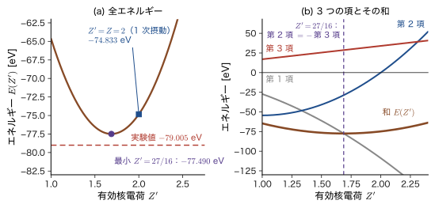
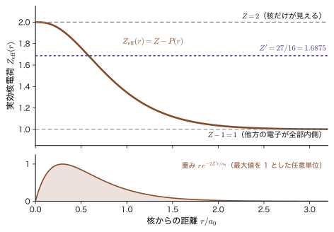
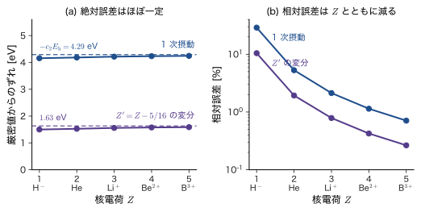
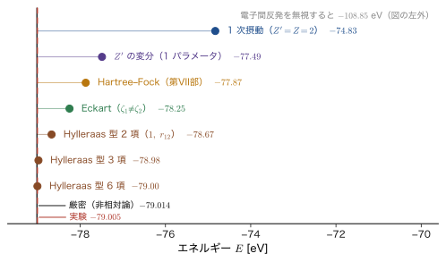
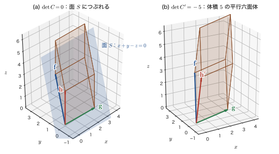
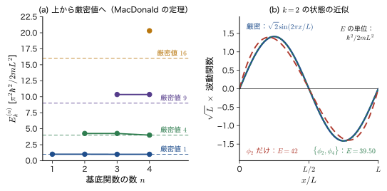
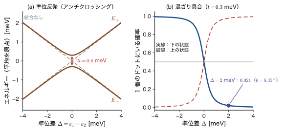
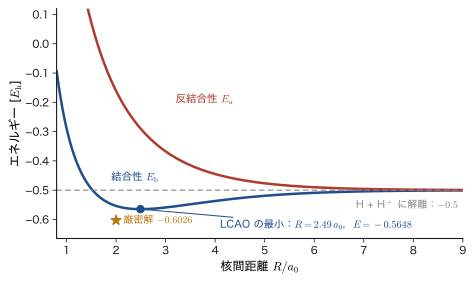

第31章変分法で解くヘリウム原子と線形変分法
前の章（第30章）で，変分原理「どんな関数でエネルギーの期待値を計算しても，その値は真の基底状態のエネルギーより低くならない」を学んだ．この章では，その原理をヘリウム原子に本格的に使う．第V部（第29章）では，電子間の Coulomb 反発を「小さな補正」とみなす摂動論で，ヘリウム原子の基底状態のエネルギーを $-74.833\ \mathrm{eV}$ と見積もった．実験値 $-79.005\ \mathrm{eV}$ より $4.2\ \mathrm{eV}$（約 5 %）高い値である．変分法では，試行関数の中に「有効核電荷」$Z'$ というたった 1 個のパラメータを入れて，エネルギーが最小になるように決めるだけで，値は $-77.490\ \mathrm{eV}$ と実験値に $1.5\ \mathrm{eV}$ まで近づく．しかも最適な $Z'$ は，平方完成という高校数学の計算だけで $Z'=Z-\tfrac{5}{16}=1.6875$ と決まる．核電荷 $Z=2$ より小さい値になるのは，もう一方の電子が核の電荷をいくらか遮蔽するからで，遮蔽の量が $\tfrac{5}{16}\approx0.31$ と数値で得られるところが，この章の一つ目の見どころである．
もう一つの主題は，線形変分法（Rayleigh–Ritz 法）である．試行関数を，あらかじめ決めた関数（基底関数）$\phi_1,\phi_2,\dots,\phi_n$ の 1 次結合 $\sum_ic_i\phi_i$ で書き，係数 $c_i$ についてエネルギーを最小にする．すると，エネルギーの最小化は行列の方程式 $H\bm c=ES\bm c$ を解く問題になり，エネルギーは永年方程式 $\det(H-ES)=0$ の根として得られる．分子の軌道計算からバンド計算まで，現代の電子状態計算は最終的にこの形の行列方程式を解いている（第VII部以降で詳しく扱う）．なぜ「行列式が $0$」という条件が出てくるのかは，多くの学生がここで止まる点なので，行列式の図解（2 次元の面積，3 次元の体積，連立方程式の解の直線・平面）を丁寧にたどって，31.5 節で腑に落ちるまで説明する．
古典物理とのつながりと違いも見ておこう．核（$+2e_0$）と 2 個の電子が互いに引き合い反発し合うヘリウム原子は，太陽・地球・月のような古典力学の 3 体問題と同じく，厳密に解けない．しかし「内側にある電荷は核の位置に集まっているとみなしてよい」という静電気学の球殻定理（AD 03 第36章 36.5）は，量子力学でもそのまま使え，遮蔽の直観の土台になる．違うのは，電子が「点」ではなく確率の「雲」であることである．遮蔽の量 $\tfrac{5}{16}$ は，雲の広がり方から決まる数である．
材料とのつながりも多い．積の形の試行関数がどこまで通用するかを調べると，電子どうしの避け合い（電子相関）を取り込むことが，後の章の中心課題になる理由がわかる．2 個の基底から出る「準位の反発」は，化学結合の結合性・反結合性軌道，結合した 2 つの量子ドットの準位分裂，そして原子を並べたときのバンドの形成の出発点になる．
- ヘリウム原子の試行関数 $\Psi_t=\phi_t(\bm r_1)\phi_t(\bm r_2)$（有効核電荷 $Z'$ を含む 1s 軌道の積）を作り，ハミルトニアンの期待値を 3 つの部分に分けて $E(Z')=-2\varepsilon_{1\mathrm{s}}\bigl(Z'^2-2ZZ'+\tfrac58Z'\bigr)$ を導くこと
- 水素様 1s 軌道の $\expval{T}$，$\expval{1/r}$，$\expval{1/r_{12}}=\tfrac58Z'/a_0$ を導き，第 2 項・第 3 項が最適点で $\pm28.700\ \mathrm{eV}$ と打ち消し合うことを説明すること
- 平方完成（と微分）で $Z'=Z-\tfrac5{16}$，$E_{\min}=2\varepsilon_{1\mathrm{s}}\bigl(Z-\tfrac5{16}\bigr)^2=-77.490\ \mathrm{eV}$ を求め，1 次摂動（$-74.833\ \mathrm{eV}$）・実験値（$-79.005\ \mathrm{eV}$）と比べること．virial 定理，Slater の規則との対応，等電子系列，イオン化エネルギー，H$^-$ が束縛しないという結果の意味（変分は上界だけ）を説明すること
- 積の形の試行関数の限界（電子相関）と，Eckart（エッカート）型・Chandrasekhar（チャンドラセカール）型・Hylleraas 型の改良で厳密値 $-2.90372\,E_{\mathrm h}$ に近づく様子を理解すること
- 行列式が 2 次元では平行四辺形の面積，3 次元では平行六面体の体積であり，$0$ であることが「つぶれている」「線形従属」「同次連立方程式が自明でない解をもつ」ことと同じ意味であることを説明できること
- 線形変分法から Lagrange の未定乗数法で $H\bm c=ES\bm c$ と $\det(H-ES)=0$ を導き，MacDonald（マクドナルド）の定理（近似固有値は上から厳密値に近づく）を理解すること
- 2 基底の永年方程式を解いて，準位反発，結合性・反結合性の非対称（重なり積分 $S$ の効果），混合角，結合した量子ドット，H$_2^+$ の LCAO の見通しを得ること
もとにしたノート：望月泰英『物理学ノート 量子力学3』 p. 35，および行列式の意味を扱った講義ノート 2 ページ．
31.1 ヘリウム原子と試行関数 — 遮蔽された核電荷 $Z'$
この節から，変分原理を用いたヘリウム原子の電子準位の計算を始める．
31.1.1 問題の設定 — 真のハミルトニアンと試行関数
電荷 $+Ze_0$ の原子核と 2 個の電子からなる系（$Z=2$ がヘリウム原子，$Z=1$ が H$^-$，$Z=3$ が Li$^+$，…）を考える．原子核は電子よりずっと重いので原点に静止しているとみなし，電子 1，電子 2 の位置を $\bm{r}_1$，$\bm{r}_2$，電子どうしの距離を $r_{12}=\lvert\bm{r}_1-\bm{r}_2\rvert$ と書く．この系の真のハミルトニアン は，第29章（29.1）で導いたとおり，次のようになる．
\begin{equation} \hat{H}=-\frac{\hbar^2}{2m_{\mathrm e}}\bigl(\nabla_1^2+\nabla_2^2\bigr)-\frac{Ze_0^2}{4\pi\varepsilon_0}\left(\frac{1}{r_1}+\frac{1}{r_2}\right)+\frac{e_0^2}{4\pi\varepsilon_0}\,\frac{1}{\lvert\bm{r}_1-\bm{r}_2\rvert} \label{eq:31-H} \end{equation}第 1 項は 2 個の電子の運動エネルギー，第 2 項は 2 個の電子と原子核の Coulomb 引力，第 3 項は電子どうしの Coulomb 反発である．最後の項が $\bm{r}_1$ と $\bm{r}_2$ を同時に含むため，Schrödinger 方程式 $\hat{H}\Psi=E\Psi$ は厳密に解けない．第29章では，この第 3 項を「小さな摂動」とみなして，$\hat{H}$ の代わりに電子間反発を除いた $\hat{H}_0$ の厳密解（水素様原子 2 個の積）を出発点にした．
この章では，方針を変える．電子間反発を除いた場合の基底状態の波動関数（第29章の公式29.1）は，核電荷 $Z$ の水素様 1s 軌道の積 $\dfrac{1}{\pi}\Bigl(\dfrac{Z}{a_0}\Bigr)^3e^{-Z(r_1+r_2)/a_0}$ だった．これを，そのまま使うのではなく，核電荷の値 $Z$ を，値を決めていない定数 $Z'$ に取り替えた関数を試行関数にする．
定義31.1 ヘリウム型原子の試行関数（有効核電荷 $Z'$）
定数 $Z'\gt0$ を含む次の関数を，2 電子系の試行関数とする．
\begin{equation} \Psi_t(\bm r_1,\bm r_2)=\phi_t(\bm r_1)\,\phi_t(\bm r_2)=\frac{1}{\pi}\left(\frac{Z'}{a_0}\right)^{3}e^{-\frac{Z'}{a_0}(r_1+r_2)},\qquad \phi_t(\bm r)=\frac{1}{\sqrt{\pi}}\left(\frac{Z'}{a_0}\right)^{3/2}e^{-Z'r/a_0} \label{eq:31-trial} \end{equation}ここで $a_0=4\pi\varepsilon_0\hbar^2/(m_{\mathrm e}e_0^2)$ は Bohr 半径である．$\phi_t$ は，核電荷が $Z'e_0$ の水素様原子の 1s 軌道と同じ形をしている．$Z'$ を有効核電荷（effective nuclear charge）とよぶ．$Z'$ は「未定の数」で，変分原理で決める．
大事な点は，$Z'$ が現れるのは試行関数の中だけで，エネルギーを計算するハミルトニアン \eqref{eq:31-H} の方は，本物の核電荷 $Z$ のままだということである．期待値
$$ E(Z')\equiv\mel{\Psi_t}{\hat{H}}{\Psi_t} $$は $Z'$ の関数になる．変分原理によって，どんな $Z'$ に対しても $E(Z')\ge E_0$（$E_0$ は真の基底状態のエネルギー）だから，$E(Z')$ をいちばん小さくする $Z'$ が，この形の関数の中で最良である．$Z'=Z$ の点は，第29章の 1 次摂動のときの非摂動状態 $\Psi_0^{(0)}$ そのものである．
記号：$\Psi_t$ と $\phi_t$，$a_0$ と $a_{\mathrm B}$
この関数は，基底状態の固有関数と紛れないように，本書では「試行関数」の $\Psi_t$（$t$ は trial）と書く．1 電子の関数 $\phi_t$ は，31.6 節から使う基底関数 $\phi_i$ とは別のものである．関連シミュレーター（変分原理，摂動論）の $a_{\mathrm B}$ が本書の $a_0$ と同じ量であることは，第30章 30.5.1 で述べた．また，水素原子の 1s 準位を $\varepsilon_{1\mathrm{s}}=-\dfrac{m_{\mathrm e}e_0^4}{8\varepsilon_0^2h^2}=-\dfrac{E_{\mathrm h}}{2}=-13.606\ \mathrm{eV}$ と書き（第29章 29.1.4 節と同じ），Hartree エネルギー $E_{\mathrm h}=e_0^2/(4\pi\varepsilon_0a_0)=27.211\ \mathrm{eV}$ は $E_{\mathrm h}=-2\varepsilon_{1\mathrm{s}}$ と結ばれる．
31.1.2 なぜ有効核電荷なのか — 遮蔽のイメージ
電子 1 の身になって考えよう．電子 1 には，核（$+Ze_0$）からの引力が働く．同時に，電子 2 からの反発も働く．電子 2 は一点にいるのではなく，確率の雲として核のまわりに広がっている．電子 1 が核から距離 $r_1$ のところにいるとき，半径 $r_1$ の球の内側に，電子 2 の雲がある割合 $P(r_1)$（$0\le P\le1$）だけ入っている．静電気学の球殻定理（AD 03 第36章 36.5）により，球対称な電荷分布の外側の電場は，その電荷が全部中心に集まった点電荷の電場と同じである．したがって電子 1 が感じる引力は，核の電荷 $+Ze_0$ から，球の内側にある電子 2 の雲の電荷 $-P(r_1)e_0$ を足した，$(Z-P(r_1))e_0$ の点電荷によるものに等しい（図31.1）．
核のすぐそばでは，内側に電子 2 の雲がほとんどないので $Z-P\approx Z=2$，核から遠いところでは電子 2 の雲がほぼ全部内側に入って $Z-P\approx Z-1=1$ になる．つまり，各電子が感じている核電荷は，2 と 1 の間にある．そこで，各電子を「$Z$ より小さい核電荷 $Z'$ の水素様の 1s 軌道」にいるとみなすのが自然である．核電荷が小さいほど引力が弱く，軌道は $a_0/Z'$ 程度に大きく広がる．
イメージ：$Z'$ は「本当の電荷」ではなく，遮蔽の平均を表す数
有効核電荷 $Z'$ は，実在する電荷ではない．2 個の電子が互いに邪魔をし合う効果を，「核の電荷が少し弱まった」という，1 個の数にまとめたものである．遮蔽を考えると $Z'$ は $Z$ より小さいと期待できるが，どれだけ小さいかは，ここまでの考察だけでは決まらない．それを決めてくれるのが変分原理で，$E(Z')$ が最小になる $Z'$ が，この形の試行関数の中で最良の（つまり真の波動関数にもっとも近い）ものである．結果は 31.3 節で $Z'=Z-\tfrac{5}{16}=1.6875$ と求まる．
31.1.3 試行関数の規格化とスピン
変分原理を使うには，試行関数が規格化されている必要がある（そうでなければ，Rayleigh 商 $\mel{\Psi}{\hat{H}}{\Psi}/\braket{\Psi}{\Psi}$ を使う．第30章 30.2）．式 \eqref{eq:31-trial} の $\phi_t$ が規格化されていることを確かめておく．角度部分は全立体角で $4\pi$ になり，公式 $\int_0^\infty r^ne^{-\beta r}\dd r=n!/\beta^{n+1}$（大学数学 第32章 32.2）を $n=2$，$\beta=2Z'/a_0$ で使うと，
$$ \int\lvert\phi_t\rvert^2\dd v=\frac{1}{\pi}\frac{Z'^3}{a_0^3}\cdot4\pi\int_0^\infty r^2e^{-2Z'r/a_0}\dd r =\frac{4Z'^3}{a_0^3}\cdot\frac{2!}{(2Z'/a_0)^3}=\frac{4Z'^3}{a_0^3}\cdot\frac{2a_0^3}{8Z'^3}=1 $$である．したがって $\Psi_t=\phi_t(\bm r_1)\phi_t(\bm r_2)$ も，$\iint\lvert\Psi_t\rvert^2\dd v_1\dd v_2=1\times1=1$ と規格化されている．積の形なので，2 重の積分は 1 電子の積分の積に分かれる．
電子はスピン $\tfrac12$ の Fermi 粒子だから，全波動関数（空間部分×スピン部分）は 2 個の電子の入れ替えに対して反対称でなければならない．基底状態では，空間部分 $\Psi_t$ は $\bm r_1\leftrightarrow\bm r_2$ の入れ替えに対して対称なので，スピン部分は反対称の一重項 $\dfrac{1}{\sqrt2}\bigl[\alpha(1)\beta(2)-\beta(1)\alpha(2)\bigr]$（$\alpha=\ket{\uparrow}$，$\beta=\ket{\downarrow}$，全スピン $S=0$）になる（第29章 29.1.5）．$\hat{H}$ にはスピンが含まれないので，スピン関数は期待値の計算に何の影響も与えない（スピン関数は規格化されていて，その積分が $1$ を与えるだけである）．以下では，空間部分だけを考える．
例題31.1 試行関数の大きさ — 有効核電荷と電子雲の広がり
試行関数 \eqref{eq:31-trial} の 1 電子部分 $\phi_t$ について，原子核からの距離の平均値 $\expval{r}$ を $Z'$ と $a_0$ で表せ．$Z'=2$（遮蔽なし）と $Z'=27/16$（31.3 節で求める最適値）のそれぞれで，$\expval{r}$ を Å 単位で求め，遮蔽によって電子雲がどれだけ広がるかを述べよ．
解答 $\expval{r}=\displaystyle\int r\,\lvert\phi_t\rvert^2\dd v=\frac{1}{\pi}\frac{Z'^3}{a_0^3}\cdot4\pi\int_0^\infty r^3e^{-2Z'r/a_0}\dd r$ である．公式 $\int_0^\infty r^ne^{-\beta r}\dd r=n!/\beta^{n+1}$ を $n=3$，$\beta=2Z'/a_0$ で使うと，$\displaystyle\int_0^\infty r^3e^{-2Z'r/a_0}\dd r=\frac{3!}{(2Z'/a_0)^4}=\frac{6a_0^4}{16Z'^4}$ だから，
$$ \expval{r}=\frac{4Z'^3}{a_0^3}\cdot\frac{6a_0^4}{16Z'^4}=\frac{3a_0}{2Z'} $$となる．$a_0=0.529\,177\ \text{Å}$ なので，$Z'=2$ では $\expval{r}=\tfrac34a_0=0.397\ \text{Å}$，$Z'=27/16$ では $\expval{r}=\dfrac{3}{2}\cdot\dfrac{16}{27}a_0=\dfrac89a_0=0.470\ \text{Å}$ である．$Z'$ が 2 から $27/16$ に下がると，電子雲の大きさは $2/(27/16)=32/27\approx1.19$ 倍，つまり約 $19\ \%$ 広がる．$Z'=2$ の関数は，電子 1 個の He$^+$ イオンの 1s 軌道と同じ大きさである．He 原子では，他方の電子による遮蔽のために，電子雲は He$^+$ より広がっているはずだ，ということをこの結果が表している．
31.1.4 何が問題か — 電子間反発を無視したときの値との比較
試行関数の族の中で $Z'=Z$ とおいた点は，電子間反発を無視したハミルトニアン $\hat{H}_0$ の厳密な基底状態である．$\hat{H}_0$ のエネルギーは $2Z^2\varepsilon_{1\mathrm{s}}$ で，ヘリウム（$Z=2$）では $8\times(-13.606\ \mathrm{eV})=-108.848\ \mathrm{eV}$ である．実験で測られたヘリウム原子の基底状態のエネルギーは，2 個の電子を順に取り去るのに要するエネルギー，つまり第 1 イオン化エネルギー $24.587\ \mathrm{eV}$ と第 2 イオン化エネルギー $54.418\ \mathrm{eV}$ の和として $-(24.587+54.418)=-79.005\ \mathrm{eV}$ だから，電子間反発を無視すると $37.8\ \%$ も低く（束縛が強く）見積もってしまう．電子間反発を入れた本当の $\hat{H}$ で $\Psi_t$ の期待値を計算し，そのうえで $Z'$ を最適化するのがこの章の課題である．
なぜ「ハミルトニアンを正しく，波動関数を近似的に」なのか
摂動論では，ハミルトニアンを「解ける部分 $\hat{H}_0$」と「摂動 $\hat{V}$」に分けて，波動関数もエネルギーも順に補正していった．変分法では，ハミルトニアン $\hat{H}$ は本物のまま（電子間反発も含めて）使い，近似するのは波動関数の形だけである．エネルギーは $\mel{\Psi_t}{\hat{H}}{\Psi_t}$ という，$\Psi_t$ について 2 次の量なので，波動関数の誤りが 1 次あるとエネルギーの誤りは 2 次にしかならず（第30章 30.2.5），荒い波動関数でも案外よいエネルギーが出る．
31.1.5 変分法の手順（この章の見取り図）
第30章の「変分法の 4 手順」（30.1.4）を，この問題に当てはめると次のようになる．
- 試行関数を決める：式 \eqref{eq:31-trial} の $\Psi_t$．パラメータは $Z'$ の 1 個．
- 期待値を計算する：$E(Z')=\mel{\Psi_t}{\hat{H}}{\Psi_t}$ を $Z'$ の関数として求める（31.2 節）．
- 最小にする：$\dd E/\dd Z'=0$，あるいは平方完成で $Z'$ を決める（31.3 節）．
- 結果を評価する：実験値・摂動論と比べ，変分原理の「上界」の意味を確かめる．$Z'$ の意味（遮蔽）を解釈する（31.3 節）．さらに試行関数を改良するとどうなるか（31.4 節）．
第29章（29.6.2）で結果だけを予告した $E(Z')$ と $Z'=Z-\tfrac5{16}$ を，この章で最初から導く．
関連シミュレーター：変分原理 — 有効核電荷を振って He の全エネルギーを探す（① で $Z'$ を動かして，He 型イオンの全エネルギーの最小点を探せる）．
31.2 期待値を 3 つの部分に分けて計算する
31.2.1 ハミルトニアンを「足して引く」— 3 つの部分への分解
期待値 $E(Z')=\mel{\Psi_t}{\hat{H}}{\Psi_t}$ を計算しよう．式 \eqref{eq:31-H} には，核電荷 $Z$ の引力の項 $-\dfrac{Ze_0^2}{4\pi\varepsilon_0}\Bigl(\dfrac1{r_1}+\dfrac1{r_2}\Bigr)$ がある．ここで，$Z'$ を足して引くことで，これを 2 つに分ける：
$$ -\frac{Ze_0^2}{4\pi\varepsilon_0}\left(\frac1{r_1}+\frac1{r_2}\right) =-\frac{Z'e_0^2}{4\pi\varepsilon_0}\left(\frac1{r_1}+\frac1{r_2}\right)+\frac{(Z'-Z)\,e_0^2}{4\pi\varepsilon_0}\left(\frac1{r_1}+\frac1{r_2}\right) $$右辺の第 1 項を運動エネルギーの項と組み合わせると，核電荷 $Z'e_0$ の水素様原子のハミルトニアン $\hat{h}_{Z'}(i)=-\dfrac{\hbar^2}{2m_{\mathrm e}}\nabla_i^2-\dfrac{Z'e_0^2}{4\pi\varepsilon_0r_i}$（$i=1,2$）が 2 個できる．こうして，$\hat{H}$ は 3 つの部分に分かれる．
\begin{equation} \hat{H}=\bigl[\hat{h}_{Z'}(1)+\hat{h}_{Z'}(2)\bigr]+\frac{(Z'-Z)\,e_0^2}{4\pi\varepsilon_0}\left(\frac1{r_1}+\frac1{r_2}\right)+\frac{e_0^2}{4\pi\varepsilon_0}\,\frac{1}{\lvert\bm{r}_1-\bm{r}_2\rvert} \label{eq:31-split} \end{equation}したがって，期待値も 3 つの項の和になる．
\begin{equation} \begin{aligned} E(Z')=\;&\underbrace{\mel{\Psi_t}{-\frac{\hbar^2}{2m_{\mathrm e}}\bigl(\nabla_1^2+\nabla_2^2\bigr)-\frac{Z'e_0^2}{4\pi\varepsilon_0}\Bigl(\frac1{r_1}+\frac1{r_2}\Bigr)}{\Psi_t}}_{\text{第 1 項}}\\ &+\underbrace{\mel{\Psi_t}{\frac{(Z'-Z)\,e_0^2}{4\pi\varepsilon_0}\Bigl(\frac1{r_1}+\frac1{r_2}\Bigr)}{\Psi_t}}_{\text{第 2 項}} +\underbrace{\mel{\Psi_t}{\frac{e_0^2}{4\pi\varepsilon_0}\,\frac{1}{\lvert\bm{r}_1-\bm{r}_2\rvert}}{\Psi_t}}_{\text{第 3 項}} \end{aligned} \label{eq:31-three} \end{equation}なぜこう分けるのがうまいのか
第 1 項の演算子は，核電荷 $Z'$ の水素様原子のハミルトニアンを 2 個足したものである．そして試行関数 $\Psi_t$ は，まさにその水素様原子の 1s 軌道の積なので，第 1 項はすでに知っている結果（水素様原子の 1s のエネルギー $Z'^2\varepsilon_{1\mathrm{s}}$）から積分を計算せずに求まる．第 2 項は $1/r$ の期待値，第 3 項は $1/r_{12}$ の期待値だけの問題になる．こうして，3 個の積分のうち 2 個は 1 電子の量で，残る 1 個（電子間反発）も第29章で計算済みである．
31.2.2 第 1 項 — 水素様原子の 1s のエネルギー $2Z'^2\varepsilon_{1\mathrm{s}}$
$\phi_t$ が $\hat{h}_{Z'}$ の固有関数で，固有値が $Z'^2\varepsilon_{1\mathrm{s}}$ であることを，念のため直接確かめておく．
導出：$\hat{h}_{Z'}\phi_t=Z'^2\varepsilon_{1\mathrm{s}}\phi_t$
$\beta\equiv Z'/a_0$ とおくと $\phi_t\propto e^{-\beta r}$ である．球対称な関数の Laplacian は $\nabla^2f=f''+\dfrac2rf'$ なので（大学数学 第6章 6.5），$f=e^{-\beta r}$ に対して $f'=-\beta f$，$f''=\beta^2f$ から
$$ \nabla^2\phi_t=\Bigl(\beta^2-\frac{2\beta}{r}\Bigr)\phi_t $$である．これを $\hat{h}_{Z'}=-\dfrac{\hbar^2}{2m_{\mathrm e}}\nabla^2-\dfrac{Z'e_0^2}{4\pi\varepsilon_0r}$ に代入すると，
$$ \hat{h}_{Z'}\phi_t=\Bigl[-\frac{\hbar^2\beta^2}{2m_{\mathrm e}}+\Bigl(\frac{\hbar^2\beta}{m_{\mathrm e}}-\frac{Z'e_0^2}{4\pi\varepsilon_0}\Bigr)\frac1r\Bigr]\phi_t $$となる．Bohr 半径の定義 $a_0=\dfrac{4\pi\varepsilon_0\hbar^2}{m_{\mathrm e}e_0^2}$ から $\dfrac{e_0^2}{4\pi\varepsilon_0}=\dfrac{\hbar^2}{m_{\mathrm e}a_0}$ なので，$\dfrac{Z'e_0^2}{4\pi\varepsilon_0}=\dfrac{\hbar^2Z'}{m_{\mathrm e}a_0}=\dfrac{\hbar^2\beta}{m_{\mathrm e}}$ となって，$1/r$ の係数は $0$ になる．残るのは定数項で，$E_{\mathrm h}=\dfrac{\hbar^2}{m_{\mathrm e}a_0^2}=-2\varepsilon_{1\mathrm{s}}$ を使って
$$ -\frac{\hbar^2\beta^2}{2m_{\mathrm e}}=-\frac{\hbar^2}{2m_{\mathrm e}a_0^2}Z'^2=-\frac{E_{\mathrm h}}{2}Z'^2=Z'^2\varepsilon_{1\mathrm{s}} $$である．したがって $\hat{h}_{Z'}\phi_t=Z'^2\varepsilon_{1\mathrm{s}}\,\phi_t$ が成り立つ．
（導出終わり）
$\hat{h}_{Z'}(1)$ は電子 1 の座標 $\bm{r}_1$ だけを微分する演算子なので，$\bm{r}_2$ だけの関数 $\phi_t(\bm r_2)$ は定数として外に出せる．よって $\hat{h}_{Z'}(1)\Psi_t=\bigl[\hat{h}_{Z'}(1)\phi_t(\bm r_1)\bigr]\phi_t(\bm r_2)=Z'^2\varepsilon_{1\mathrm{s}}\Psi_t$，同様に $\hat{h}_{Z'}(2)\Psi_t=Z'^2\varepsilon_{1\mathrm{s}}\Psi_t$ である．したがって $\Psi_t$ が規格化されていることを使って，
\begin{equation} \text{第 1 項}=\mel{\Psi_t}{\hat{h}_{Z'}(1)+\hat{h}_{Z'}(2)}{\Psi_t}=2Z'^2\varepsilon_{1\mathrm{s}} \label{eq:31-term1} \end{equation}となる．さらに，この 1 電子あたりの $Z'^2\varepsilon_{1\mathrm{s}}$ を運動エネルギーとポテンシャルエネルギーに分けておく（31.3 節の virial 定理で使う）．運動エネルギーは，$\nabla^2\phi_t=(\beta^2-2\beta/r)\phi_t$ と，次項で求める $\expval{1/r}=\beta$ を使って
$$ \expval{T}_{\text{1 電子}}=-\frac{\hbar^2}{2m_{\mathrm e}}\bigl(\beta^2-2\beta\expval{1/r}\bigr)=-\frac{\hbar^2}{2m_{\mathrm e}}\bigl(\beta^2-2\beta^2\bigr)=\frac{\hbar^2\beta^2}{2m_{\mathrm e}}=\frac{Z'^2}{2}E_{\mathrm h}=-Z'^2\varepsilon_{1\mathrm{s}} $$で，ポテンシャルエネルギーは $\expval{V}_{\text{1 電子}}=-\dfrac{Z'e_0^2}{4\pi\varepsilon_0}\expval{1/r}=-Z'^2E_{\mathrm h}=2Z'^2\varepsilon_{1\mathrm{s}}$ である．和は $Z'^2\varepsilon_{1\mathrm{s}}$ で，たしかに $\expval{V}=-2\expval{T}$ になっている（水素様原子の virial 定理，第17章 17.4）．
31.2.3 第 2 項 — $1/r$ の期待値と $2(Z'-Z)(-2Z'\varepsilon_{1\mathrm{s}})$
第 2 項に必要なのは，1s 軌道での $1/r$ の期待値である．
導出：$\expval{1/r}=Z'/a_0$
角度積分が $4\pi$ で，動径積分は $\int_0^\infty r^ne^{-\beta'r}\dd r=n!/\beta'^{n+1}$ を $n=1$，$\beta'=2Z'/a_0$ で使うだけである．
$$ \expval{\frac1r}=\frac{1}{\pi}\frac{Z'^3}{a_0^3}\cdot4\pi\int_0^\infty r^2\cdot\frac1r\,e^{-2Z'r/a_0}\dd r =\frac{4Z'^3}{a_0^3}\cdot\frac{1!}{(2Z'/a_0)^2}=\frac{4Z'^3}{a_0^3}\cdot\frac{a_0^2}{4Z'^2}=\frac{Z'}{a_0} $$（被積分関数の $1/r$ と体積要素の $r^2$ から，$r$ が 1 個残る）．次元は（長さ）$^{-1}$ で正しい．
（導出終わり）
$\Psi_t$ は積の形なので，$\mel{\Psi_t}{1/r_1}{\Psi_t}=\mel{\phi_t}{1/r}{\phi_t}\cdot\braket{\phi_t}{\phi_t}=Z'/a_0$ で，$1/r_2$ についても同じである．したがって，
$$ \text{第 2 項}=\frac{(Z'-Z)\,e_0^2}{4\pi\varepsilon_0}\cdot2\cdot\frac{Z'}{a_0}=2(Z'-Z)\,Z'\cdot\frac{e_0^2}{4\pi\varepsilon_0a_0}=2(Z'-Z)\,Z'E_{\mathrm h} $$となる．$E_{\mathrm h}=-2\varepsilon_{1\mathrm{s}}$ を使って書き直すと，次のようになる．
\begin{equation} \text{第 2 項}=2\,(Z'-Z)\,(-2Z'\varepsilon_{1\mathrm{s}}) \label{eq:31-term2} \end{equation}この結果は，前項の「ポテンシャルエネルギーの期待値」から直接得ることもできる．1 電子あたりの $\expval{-Z'e_0^2/(4\pi\varepsilon_0r)}=2Z'^2\varepsilon_{1\mathrm{s}}$ を $-Z'$ で割ると，$\expval{e_0^2/(4\pi\varepsilon_0r)}=-2Z'\varepsilon_{1\mathrm{s}}$ である．これに係数 $(Z'-Z)$ と，電子が 2 個あることによる因数 $2$ を掛ければ，式 \eqref{eq:31-term2} になる．
31.2.4 第 3 項 — 電子間反発 $-\tfrac54Z'\varepsilon_{1\mathrm{s}}$
第 3 項は，電子間反発 $e_0^2/(4\pi\varepsilon_0r_{12})$ の期待値である．必要なのは，1s 型の雲の中での $\expval{1/r_{12}}$ である．この値は，第29章（29.2.3〜29.2.4）で，Legendre 展開と球殻定理の 2 通りの方法で求めた $\expval{1/r_{12}}=\tfrac58Z/a_0$ の $Z$ を $Z'$ に替えたものである．実際，$Z'$ の 1s 軌道は，$Z'=1$ の軌道の座標を $1/Z'$ 倍に縮めたもの（$\phi_t(\bm r)=Z'^{3/2}\phi_{Z'=1}(Z'\bm r)$）で，すべての長さが $1/Z'$ 倍になると $1/r_{12}$ は $Z'$ 倍になる．したがって
$$ \expval{\frac1{r_{12}}}=\frac58\cdot\frac{Z'}{a_0} $$である（次元は（長さ）$^{-1}$ で正しい）．$P(r)$ を使う別の導出は，31.3.5 節で行う．
第29章の積分公式で，直接に確かめておこう．その公式29.2（29.2）は，$\alpha\gt0$ に対して
$$ \iint\frac{e^{-\alpha(r_1+r_2)}}{\lvert\bm r_1-\bm r_2\rvert}\dd v_1\dd v_2=\frac{20\pi^2}{\alpha^5} $$が成り立つことを示していた．これを使っても，上の結果は確かめられる．今度は $\lvert\Psi_t\rvert^2=\dfrac{1}{\pi^2}\Bigl(\dfrac{Z'}{a_0}\Bigr)^6e^{-2Z'(r_1+r_2)/a_0}$ なので，この公式を $\alpha=2Z'/a_0$ で使えばよい（第29章で $\alpha=2Z/a_0$ としたところを，$Z$ から $Z'$ に取り替えただけである）．
$$ \expval{\frac{1}{r_{12}}}=\frac{1}{\pi^2}\Bigl(\frac{Z'}{a_0}\Bigr)^6\cdot20\pi^2\Bigl(\frac{a_0}{2Z'}\Bigr)^5=\frac{20}{32}\cdot\frac{Z'^6a_0^5}{Z'^5a_0^6}=\frac58\cdot\frac{Z'}{a_0} $$$e_0^2/(4\pi\varepsilon_0a_0)=E_{\mathrm h}=-2\varepsilon_{1\mathrm{s}}$ を掛けると，
\begin{equation} \text{第 3 項}=\frac{e_0^2}{4\pi\varepsilon_0}\expval{\frac{1}{r_{12}}}=\frac58Z'E_{\mathrm h}=-\frac54Z'\varepsilon_{1\mathrm{s}} \label{eq:31-term3} \end{equation}を得る．念のため，次元と大きさを確かめておこう．$E_{\mathrm h}$ はエネルギーの次元で，$\tfrac58Z'=1.055$（$Z'=27/16$）だから，第 3 項は約 $1.055\,E_{\mathrm h}=28.70\ \mathrm{eV}$ の正のエネルギー（反発）になる．
考察：電子間反発の期待値はなぜ $Z'$ に比例するのか
電子雲の大きさは $a_0/Z'$ 程度（例題31.1）だから，2 個の電子の平均的な距離は $Z'$ に反比例して縮み，Coulomb 反発（距離に反比例）は $Z'$ に比例して大きくなる．係数 $\tfrac58=0.625$ は，2 個の電子雲が同じ位置に重なっている（同じ 1s 軌道にいる）ことで決まる数値である．$\expval{1/r_{12}}=\tfrac58Z'/a_0$ は，平均距離の逆数 $1/\expval{r_{12}}$ とは違う量である．
31.2.5 3 つの項の和 — $E(Z')$ を $Z'$ の 2 次式として書く
3 つの結果 \eqref{eq:31-term1}，\eqref{eq:31-term2}，\eqref{eq:31-term3} を式 \eqref{eq:31-three} に代入して足し合わせる．第 2 項は $2(Z'-Z)(-2Z'\varepsilon_{1\mathrm{s}})=-4Z'^2\varepsilon_{1\mathrm{s}}+4ZZ'\varepsilon_{1\mathrm{s}}$ と展開できるので，
\begin{equation} \begin{aligned} E(Z')&=2Z'^2\varepsilon_{1\mathrm{s}}+\bigl(-4Z'^2+4ZZ'\bigr)\varepsilon_{1\mathrm{s}}-\frac54Z'\varepsilon_{1\mathrm{s}}\\ &=\Bigl(2Z'^2-4Z'^2+4ZZ'-\frac54Z'\Bigr)\varepsilon_{1\mathrm{s}} =\Bigl(-2Z'^2+4ZZ'-\frac54Z'\Bigr)\varepsilon_{1\mathrm{s}}\\ &=-2\,\varepsilon_{1\mathrm{s}}\Bigl(Z'^2-2ZZ'+\frac58Z'\Bigr) \end{aligned} \label{eq:31-EZ} \end{equation}となる．最後の等号では，$-2\varepsilon_{1\mathrm{s}}$ を括り出した（括弧の中は $-2Z'^2+4ZZ'-\tfrac54Z'=-2\bigl(Z'^2-2ZZ'+\tfrac58Z'\bigr)$ である）．$-2\varepsilon_{1\mathrm{s}}=E_{\mathrm h}$ だから，Hartree エネルギーを単位にすれば，きわめて簡単な式になる．
$$ E(Z')=Z'^2-2ZZ'+\frac58Z'\qquad[E_{\mathrm h}] $$これは $Z'$ の 2 次式で，$Z'^2$ の係数が正なので下に凸の放物線である．したがって最小値が必ずあり，31.3 節で平方完成によって求める．
別の分け方で確かめる — 運動・核引力・電子間反発
式 \eqref{eq:31-EZ} の 3 つの項は，運動エネルギー，電子と核の引力，電子間反発という物理的な分類とは違う切り方をしている．物理的な分類で数えても，同じ結果になることを確かめておこう．運動エネルギーは 1 電子あたり $\tfrac12Z'^2E_{\mathrm h}$ が 2 個で $\expval{T}=Z'^2E_{\mathrm h}$．核（電荷 $Z$）との引力は，1 電子あたり $-Ze_0^2\expval{1/r}/(4\pi\varepsilon_0)=-ZZ'E_{\mathrm h}$ が 2 個で $\expval{V_{\mathrm{ne}}}=-2ZZ'E_{\mathrm h}$．電子間反発は $\expval{V_{\mathrm{ee}}}=\tfrac58Z'E_{\mathrm h}$ である．合計すると
$$ E(Z')=\Bigl(Z'^2-2ZZ'+\frac58Z'\Bigr)E_{\mathrm h} $$で，式 \eqref{eq:31-EZ} と一致する．$Z'$ を大きくすると（電子雲が縮むと），運動エネルギー（$\propto Z'^2$）は増え，核引力（$\propto-Z'$）は深くなり，電子間反発（$\propto+Z'$）は増える．エネルギーの最小点は，この 3 つの綱引きで決まる．
例題31.2 $Z'=Z$ の試行関数 — 1 次摂動と同じ値
ヘリウム原子（$Z=2$）で $Z'=Z=2$ とおいたときの 3 つの項と $E(Z')$ を，$\varepsilon_{1\mathrm{s}}=-13.606\ \mathrm{eV}$ で求めよ．第29章の 1 次摂動の結果 $-74.833\ \mathrm{eV}$ と比べ，電子間反発を無視した値 $-108.848\ \mathrm{eV}$ との差の意味を述べよ．
解答 $Z'=Z=2$ を式 \eqref{eq:31-term1}〜\eqref{eq:31-term3} に代入する．
第 1 項：$2Z'^2\varepsilon_{1\mathrm{s}}=2\cdot4\cdot(-13.606)=-108.848\ \mathrm{eV}$．第 2 項：$Z'-Z=0$ なので $0$．第 3 項：$-\tfrac54Z'\varepsilon_{1\mathrm{s}}=-\tfrac54\cdot2\cdot(-13.606)=+34.015\ \mathrm{eV}$．
和は $E(2)=-108.848+0+34.015=-74.833\ \mathrm{eV}$ である．式 \eqref{eq:31-EZ} で計算しても，$(2Z'^2-4Z'^2+4ZZ'-\tfrac54Z')=(8-16+16-\tfrac52)=5.5$ から $E(2)=5.5\times(-13.606)=-74.833\ \mathrm{eV}$ で一致する．
これは第29章の 1 次摂動の結果 $(2Z^2-\tfrac54Z)\varepsilon_{1\mathrm{s}}=-74.833\ \mathrm{eV}$ とまったく同じ値である．1 次摂動のエネルギー $E_0^{(0)}+E^{(1)}$ は，非摂動状態 $\Psi_0^{(0)}$ で $\hat{H}$ の期待値をとったものだから，試行関数の族の $Z'=Z$ の点にほかならない．つまり1 次摂動は「$Z'$ を最適化しない変分」であり，最初の値 $-108.848\ \mathrm{eV}$ からの差 $+34.015\ \mathrm{eV}$ は，電子間反発の期待値そのものである．
31.3 平方完成と $Z'=Z-5/16$ — 遮蔽の定量化
31.3.1 平方完成 — 最小になる $Z'$ を求める
式 \eqref{eq:31-EZ} の括弧の中を，$Z'$ について平方完成する（高校数学の 2 次関数の変形と同じ計算である）．$-2ZZ'+\tfrac58Z'=-2\bigl(Z-\tfrac5{16}\bigr)Z'$ なので，
$$ Z'^2-2ZZ'+\frac58Z'=Z'^2-2\Bigl(Z-\frac5{16}\Bigr)Z'=\Bigl\{Z'-\Bigl(Z-\frac5{16}\Bigr)\Bigr\}^2-\Bigl(Z-\frac5{16}\Bigr)^2 $$と書ける（$x^2-2ax=(x-a)^2-a^2$ で $a=Z-\tfrac5{16}$）．これを式 \eqref{eq:31-EZ} に代入すると，
\begin{equation} E(Z')=-2\varepsilon_{1\mathrm{s}}\Bigl\{Z'-\Bigl(Z-\frac5{16}\Bigr)\Bigr\}^2+2\varepsilon_{1\mathrm{s}}\Bigl(Z-\frac5{16}\Bigr)^2 \label{eq:31-square} \end{equation}となる．水素原子の 1s 準位 $\varepsilon_{1\mathrm{s}}=-13.606\ \mathrm{eV}$ は負なので，$-2\varepsilon_{1\mathrm{s}}\gt0$ である．したがって，第 1 項（2 乗の項）は $0$ 以上で，$Z'=Z-\tfrac5{16}$ のときだけ $0$ になる．第 2 項は $Z'$ によらない定数だから，$E(Z')$ は $Z'=Z-\tfrac5{16}$ で最小値をとる．
定理31.1 ヘリウム型原子の $Z'$ 変分
試行関数 \eqref{eq:31-trial} のエネルギー $E(Z')$ は，
\begin{equation} Z'_{\mathrm{opt}}=Z-\frac{5}{16},\qquad E_{\min}=2\varepsilon_{1\mathrm{s}}\Bigl(Z-\frac5{16}\Bigr)^2=-\Bigl(Z-\frac5{16}\Bigr)^2E_{\mathrm h} \label{eq:31-Zopt} \end{equation}で最小になる．また，最小点からのずれに対して $E(Z')=E_{\min}+(Z'-Z'_{\mathrm{opt}})^2E_{\mathrm h}$ である．最小値は，変分原理により真の基底状態エネルギーの上界になっている．
微分でも確かめておこう．$E(Z')=E_{\mathrm h}\bigl(Z'^2-2ZZ'+\tfrac58Z'\bigr)$ を $Z'$ で微分して $0$ とおくと，
$$ \frac{\dd E}{\dd Z'}=E_{\mathrm h}\Bigl(2Z'-2Z+\frac58\Bigr)=0\quad\Longrightarrow\quad Z'=Z-\frac{5}{16} $$で，平方完成と同じ答えになる．2 階微分は $\dfrac{\dd^2E}{\dd Z'^2}=2E_{\mathrm h}=-4\varepsilon_{1\mathrm{s}}=54.424\ \mathrm{eV}\gt0$ で，たしかに極小である．$Z'-Z=-\tfrac5{16}$ という結果は，「$Z'$ は核電荷 $Z$ より $\tfrac5{16}=0.3125$ だけ小さい」という意味で，もう一方の電子による遮蔽の大きさを表す．この解釈は 31.3.5 節で掘り下げる．
31.3.2 ヘリウム原子の数値 — $-77.490\ \mathrm{eV}$
ヘリウム原子は $Z=2$ なので，最適な有効核電荷は $Z'=2-\tfrac{5}{16}=\tfrac{27}{16}=1.6875$，そのときのエネルギーは式 \eqref{eq:31-Zopt} に $Z=2$，$\varepsilon_{1\mathrm{s}}=-13.606\ \mathrm{eV}$ を代入して求まる．
例31.1 ヘリウム原子の変分エネルギー
$Z=2$，$\varepsilon_{1\mathrm{s}}=-13.606\ \mathrm{eV}$ を式 \eqref{eq:31-Zopt} に代入して $E_{\min}$ を求め，1 次摂動の値 $-74.833\ \mathrm{eV}$，実験値 $-79.005\ \mathrm{eV}$ と比べよ．
解答 $Z-\dfrac5{16}=2-0.3125=1.6875=\dfrac{27}{16}$ で，$\Bigl(\dfrac{27}{16}\Bigr)^2=\dfrac{729}{256}=2.847\,656\,25$ である．よって
$$ E_{\min}=2\varepsilon_{1\mathrm{s}}\Bigl(Z-\frac5{16}\Bigr)^2=2\times(-13.606\ \mathrm{eV})\times2.847\,656\,25=-77.490\ \mathrm{eV} $$である（$E_{\mathrm h}=27.2114\ \mathrm{eV}$ を使って $-\tfrac{729}{256}E_{\mathrm h}$ と計算すると $-77.489\ \mathrm{eV}$ で，$\varepsilon_{1\mathrm{s}}$ の丸めによる $0.001\ \mathrm{eV}$ の違いである）．1 次摂動の値 $-74.833\ \mathrm{eV}$（例題31.2）よりも $2.657\ \mathrm{eV}$ 低く，実験値 $-79.005\ \mathrm{eV}$ に近い．実験値との差は $-77.490-(-79.005)=+1.515\ \mathrm{eV}$，相対誤差は $1.515/79.005=1.9\ \%$ である（1 次摂動の $5.3\ \%$ より小さい）．1 次摂動と実験値の差 $4.172\ \mathrm{eV}$ のうち，$2.657/4.172=64\ \%$ を，$Z'$ を 1 個動かすだけで取り込んだことになる．
最後に，変分原理との整合性を確かめておく．$E_{\min}=-77.490\ \mathrm{eV}$ は真の基底状態エネルギー（$\approx-79.0\ \mathrm{eV}$）より高い．もし計算結果が $-79\ \mathrm{eV}$ より低く出たら，それは計算の誤りか，試行関数が Pauli の排他原理などの条件を満たしていないかの，どちらかである．

31.3.3 3 つの項の数値 — 第 2 項と第 3 項がちょうど打ち消し合う
最適な $Z'=27/16$ で，式 \eqref{eq:31-three} の 3 つの項の値を書き出してみよう．図31.2(b) のとおり，第 2 項と第 3 項が，ちょうど打ち消し合う．
例題31.3 最適点での 3 つの項の値と，打ち消し合う理由
$Z=2$，$Z'=27/16$，$\varepsilon_{1\mathrm{s}}=-13.606\ \mathrm{eV}$ で，第 1 項，第 2 項，第 3 項の値と和を求めよ．第 2 項と第 3 項の和が $0$ になる理由を，一般の $Z$ で説明せよ．
解答 第 1 項：$2Z'^2\varepsilon_{1\mathrm{s}}=2\times2.847\,656\,25\times(-13.606)=-77.490\ \mathrm{eV}$．
第 2 項：$-2Z'\varepsilon_{1\mathrm{s}}=-2\times1.6875\times(-13.606)=+45.920\ \mathrm{eV}$（これは電子 1 個あたりの $\expval{e_0^2/(4\pi\varepsilon_0r)}$ である）で，$Z'-Z=-\tfrac5{16}=-0.3125$ なので，第 2 項 $=2\times(-0.3125)\times45.920=-28.700\ \mathrm{eV}$．
第 3 項：$-\tfrac54Z'\varepsilon_{1\mathrm{s}}=-1.25\times1.6875\times(-13.606)=+28.700\ \mathrm{eV}$．
和：$-77.490-28.700+28.700=-77.490\ \mathrm{eV}$ で，例31.1 の値と一致する．
一般の $Z'$ で第 2 項と第 3 項を足すと，
$$ 2(Z'-Z)(-2Z'\varepsilon_{1\mathrm{s}})+\Bigl(-\frac54Z'\varepsilon_{1\mathrm{s}}\Bigr)=-4Z'\varepsilon_{1\mathrm{s}}\Bigl[(Z'-Z)+\frac5{16}\Bigr] $$である（$-4Z'\varepsilon_{1\mathrm{s}}$ で括ると，$-\tfrac54Z'\varepsilon_{1\mathrm{s}}=-4Z'\varepsilon_{1\mathrm{s}}\cdot\tfrac5{16}$）．これが $0$ になるのは $Z'-Z=-\tfrac5{16}$ のときで，まさに $E(Z')$ を最小にする条件（31.3.1 節）である．つまり，最小点では，第 2 項と第 3 項の和が 0 になり，エネルギーは第 1 項 $2Z'^2\varepsilon_{1\mathrm{s}}$ だけで決まる．
考察：打ち消し合いの物理的な意味
第 2 項は，核電荷が $Z$ であって $Z'$ ではないことによる，余分な引力のエネルギー（$Z'\lt Z$ なので負）である．第 3 項は，電子間の反発のエネルギー（正）である．この 2 つがちょうど釣り合っているということは，「電子間反発があるヘリウム原子」のエネルギーが，「電子間反発がなく，核電荷が $Z'=27/16$ の水素様原子が 2 個ある系」のエネルギー $2Z'^2\varepsilon_{1\mathrm{s}}$ と同じだ，という意味である．電子間反発を「核電荷が $\tfrac5{16}$ だけ弱まった」という形にくりこんでしまうのが，有効核電荷 $Z'$ の考え方だった．式で書けば，電子 2 個が受ける余分な引力 $2(Z-Z')Z'E_{\mathrm h}$ と反発 $\tfrac58Z'E_{\mathrm h}$ が等しい，$2(Z-Z')=\tfrac58$，から $Z-Z'=\tfrac5{16}$ が出る．
31.3.4 virial 定理 — 最適点で $\expval{V}=-2\expval{T}$
第30章（30.3.2）では，試行関数全体を $\eta$ 倍に伸び縮みさせる変分から，virial 定理が導かれることを見た．有効核電荷 $Z'$ を動かすことは，まさに 2 個の電子雲をまとめて（$a_0/Z'$ の長さで）伸び縮みさせることにほかならない．したがって，最適な $Z'$ では virial 定理 $\expval{V}=-2\expval{T}$（$V$ は Coulomb 型のポテンシャルエネルギーの総和）が成り立つはずである．確かめよう．
導出：$Z'$ の最適化と virial 定理
運動エネルギー，核引力，電子間反発の期待値は（31.2.5 節），$\expval{T}=Z'^2E_{\mathrm h}$，$\expval{V_{\mathrm{ne}}}=-2ZZ'E_{\mathrm h}$，$\expval{V_{\mathrm{ee}}}=\tfrac58Z'E_{\mathrm h}$ である．運動エネルギーは $Z'^2$ に，ポテンシャルエネルギー $\expval{V}=\expval{V_{\mathrm{ne}}}+\expval{V_{\mathrm{ee}}}$ は $Z'$ に比例するので，$T_1\equiv E_{\mathrm h}$，$V_1\equiv(-2Z+\tfrac58)E_{\mathrm h}$ とおくと，
$$ E(Z')=Z'^2T_1+Z'V_1,\qquad \expval{T}=Z'^2T_1,\qquad \expval{V}=Z'V_1 $$と書ける．$\dd E/\dd Z'=2Z'T_1+V_1=0$ の両辺に $Z'$ を掛けると，$2Z'^2T_1+Z'V_1=0$，すなわち $2\expval{T}+\expval{V}=0$ が得られる．
（導出終わり）
例題31.4 ヘリウム原子の virial 比
$Z=2$ のとき，$Z'=27/16$（最適値）と $Z'=2$（1 次摂動）のそれぞれで，$\expval{T}$，$\expval{V_{\mathrm{ne}}}$，$\expval{V_{\mathrm{ee}}}$，全エネルギー，virial 比 $\expval{V}/\expval{T}$ を $E_{\mathrm h}$ 単位で求めよ．
解答 $Z'=27/16=1.6875$ では $\expval{T}=Z'^2=2.847\,66$，$\expval{V_{\mathrm{ne}}}=-2ZZ'=-4\times1.6875=-6.75$，$\expval{V_{\mathrm{ee}}}=\tfrac58Z'=1.054\,69$ である．したがって $\expval{V}=-6.75+1.054\,69=-5.695\,31$，全エネルギーは $E=2.847\,66-5.695\,31=-2.847\,66\,E_{\mathrm h}$（$=-77.49\ \mathrm{eV}$）で，$E=-\expval{T}$ になっている．virial 比は
$$ \frac{\expval{V}}{\expval{T}}=\frac{-5.695\,31}{2.847\,66}=-2.0000 $$で，virial 定理が満たされている．
$Z'=2$ では $\expval{T}=4$，$\expval{V_{\mathrm{ne}}}=-8$，$\expval{V_{\mathrm{ee}}}=1.25$，$\expval{V}=-6.75$，$E=-2.75\,E_{\mathrm h}$ で，virial 比は $-6.75/4=-1.6875$ となり，$-2$ にならない．$2\expval{T}+\expval{V}=8-6.75=1.25\,E_{\mathrm h}\ne0$ である．
すなわち，virial 定理は「エネルギーが停留する（変分の最小点である）」ことの結果で，任意の試行関数では成り立たない．逆に，virial 比が $-2$ からどれだけずれているかは，電子雲の大きさがどれだけ最適からずれているかの目安になる．ここでは $Z'=2$ で $\expval{T}$ が「大きすぎる」（電子雲が縮みすぎている）ことを示している．
31.3.5 遮蔽の解釈 — $Z'=2-\tfrac{5}{16}=1.6875$ はどこから来るか
有効核電荷 $Z'=2-\tfrac5{16}=1.6875$ は，電子により遮蔽された結果と解釈できる．この解釈を，31.1.2 節の図を使って定量的に確かめよう．電子 1 が核から距離 $r$ のところにいるとき，半径 $r$ の球の内側に電子 2 の雲が入っている確率 $P(r)$ は，1s 型の密度 $\lvert\phi_t\rvert^2\propto e^{-2Z'r/a_0}$ から，$x=2Z'r/a_0$ として
$$ P(r)=\int_0^r4\pi r'^2\lvert\phi_t(r')\rvert^2\dd r'=\frac12\int_0^{x}x'^2e^{-x'}\dd x'=1-e^{-x}\Bigl(1+x+\frac{x^2}{2}\Bigr) $$である（部分積分を 2 回行った）．球殻定理（第29章 29.2.4，29.2.5 でも使った）により，電子 1 が感じる実効核電荷は $Z_{\mathrm{eff}}(r)=Z-P(r)$ で，核のすぐそば（$r\to0$）で $Z=2$，遠く（$r\to\infty$）で $Z-1=1$ になる．図31.3 の褐色の曲線がそれである．

ところで，遮蔽される量は $r$ によって変わるのに，試行関数の有効核電荷 $Z'$ は 1 つの数である．この 1 つの数がどのような平均に当たるかは，次のように厳密に示せる．
導出：$\tfrac{5}{16}$ は $P(r)$ を $1/r$ で重みづけした平均である
電子の密度 $\rho(r)=\lvert\phi_t\rvert^2$ は球対称で，$P(r)=\int_{r'\lt r}\rho\,\dd v'$ である．以下，$E_{\mathrm h}$ を単位にして，$a_0=1$ の原子単位で書く．
[i] 電子間反発の期待値は，角度方向に平均すると $1/r_{12}\to1/r_{\gt}$（$r_{\gt}=\max(r_1,r_2)$．第29章 29.2.3 の Legendre 展開の $l=0$ の項）となるので，
$$ \expval{\frac1{r_{12}}}=\iint\rho(r_1)\rho(r_2)\frac{1}{r_{\gt}}\dd v_1\dd v_2=2\iint_{r_2\lt r_1}\rho(r_1)\rho(r_2)\frac{1}{r_1}\dd v_1\dd v_2=2\int\rho(r_1)\frac{P(r_1)}{r_1}\dd v_1=2\expval{\frac{P(r)}{r}} $$である（$r_1\lt r_2$ の領域と $r_1\gt r_2$ の領域は，$1\leftrightarrow2$ の入れ替えで等しい．$r_2\lt r_1$ の領域では $1/r_{\gt}=1/r_1$ で，$r_2$ の積分が $P(r_1)$ を与える）．
[ii] 全エネルギーは，2 個の電子の運動エネルギーと，核引力と，電子間反発の和なので，
$$ E=2\expval{T}-2Z\expval{\frac1r}+2\expval{\frac{P(r)}{r}}=2\Bigl[\expval{T}-\Bigl\langle\frac{Z-P(r)}{r}\Bigr\rangle\Bigr] $$となる．これは，各電子が実効核電荷 $Z_{\mathrm{eff}}(r)=Z-P(r)$ の引力を受けているとみなした 1 電子エネルギーの 2 倍である．
[iii] $Z_{\mathrm{eff}}(r)/r$ の平均を，1 個の数 $Z-\sigma$ で書き直す．すなわち $\sigma\equiv\expval{P(r)/r}\big/\expval{1/r}$（$P(r)$ を，引力エネルギーの重み $\rho(r)/r$ で平均したもの）と定義する．式 [i] と 31.2 節の結果 $\expval{1/r_{12}}=\tfrac58Z'$，$\expval{1/r}=Z'$ から
$$ \sigma=\frac{\expval{1/r_{12}}/2}{\expval{1/r}}=\frac{\tfrac58Z'/2}{Z'}=\frac{5}{16} $$である．$Z'$ が約分されて消えるので，遮蔽定数 $\sigma$ は，$Z'$ の値によらない定数 $\tfrac5{16}$ である（電子雲の大きさによらず，形が同じ相似形であることによる）．したがって $E(Z')=2\bigl[\tfrac12Z'^2-(Z-\tfrac5{16})Z'\bigr]$ となり，これは実効核電荷 $Z-\tfrac5{16}$ をもつ水素様原子の 1 電子エネルギー $\tfrac12Z'^2-(Z-\sigma)Z'$ の最小化問題（最小点は $Z'=Z-\sigma$）と同じになって，$Z'=Z-\tfrac5{16}$ が再び得られる．
（導出終わり）
まとめると，$\tfrac5{16}=0.3125$ は「他方の電子が，1 電子の引力エネルギーを平均して，核電荷 $Z$ のうち $0.3125$ だけを打ち消している」という遮蔽の大きさである．係数が $\tfrac58$ の半分になっているのは，電子間反発のエネルギー $\tfrac58Z'$ が，2 個の電子が 1 個ずつ受け持つ反発の合計になっているからである．「電子 1 個は，他方の電子を完全に遮蔽するわけではなく，約 3 割だけ遮蔽する」といってもよい．もし，他方の電子の雲がすべて核の内側にあれば $\sigma=1$（$Z'=1$）になるはずだが，実際には，核の近くでは雲の大部分が外側にあるので，$\sigma$ は 1 よりずっと小さい．具体的な数値で確かめよう．1s 型の雲で $P(r)=\tfrac12$ となる半径は $r=1.34\,a_0/Z'$（$Z'=27/16$ で $0.79\,a_0$）である．また，重み $r\,e^{-2Z'r/a_0}$ が最大になる $r=a_0/(2Z')\approx0.30\,a_0$ では，$P=1-e^{-1}\bigl(1+1+\tfrac12\bigr)\approx0.08$ にすぎず，この重みの平均位置 $r=a_0/Z'$ でも $P=1-e^{-2}(1+2+2)\approx0.32$ である．引力エネルギーに効くのは核に近い領域なので，$P$ を重みで平均した $\sigma$ は $0.31$ と小さくなる．
Slater の規則との対応
第18章の Slater の規則（18.4）では，同じ 1s 軌道にいる他方の電子が遮蔽する量を $0.30$ とする（実験データと波動関数の計算から Slater が 1930 年に提案した経験則）．これによるヘリウムの実効核電荷は $Z^*=2-0.30=1.70$ で，変分計算の $Z'=2-0.3125=1.6875$ に近い．経験則の $0.30$ が，理論の $\tfrac5{16}=0.3125$ と対応していることがわかる．
例題31.5 Slater の $Z^*=1.70$ を使うとどうなるか
ヘリウム原子の試行関数（式 \eqref{eq:31-trial}）に，Slater の規則の値 $Z'=1.70$ を用いたときのエネルギーを求め，最適値 $-77.490\ \mathrm{eV}$ と比べよ．なぜ $Z'$ が少しずれても，エネルギーはほとんど変わらないのか．
解答 式 \eqref{eq:31-EZ} に $Z=2$，$Z'=1.70$ を代入すると，$Z'^2-2ZZ'+\tfrac58Z'=2.89-6.8+1.0625=-2.8475$ で，$E=-2\varepsilon_{1\mathrm{s}}\times(-2.8475)=27.212\times(-2.8475)=-77.486\ \mathrm{eV}$ である．最適値 $-77.490\ \mathrm{eV}$ との差は $0.004\ \mathrm{eV}$ しかない．
理由は，$E(Z')$ が最小点のまわりで放物線 $E(Z')=E_{\min}+(Z'-Z'_{\mathrm{opt}})^2E_{\mathrm h}$（定理31.1）であることによる．最小点からのずれ $Z'-Z'_{\mathrm{opt}}=1.70-1.6875=0.0125$ に対して，エネルギーの上昇はその 2 乗に比例し，$(0.0125)^2\times27.212\ \mathrm{eV}=0.004\ \mathrm{eV}$ と非常に小さい．変分原理では，パラメータの誤りが 1 次あるとき，エネルギーの誤りは 2 次でしか効かないのである．
31.3.6 1 次摂動と変分法 — 同じ放物線の 2 点
ここまでの結果を，第29章の摂動論と並べよう．図31.2(a) の放物線 $E(Z')$ の上で，$Z'=Z=2$ の点が 1 次摂動の値，最小点 $Z'=27/16$ が変分の値である．$Z'$ を最適化することで，エネルギーは $2.657\ \mathrm{eV}$ 下がり，実験値との差は $4.172\ \mathrm{eV}$ から $1.515\ \mathrm{eV}$ に縮んだ．
| 見積り | 試行関数のパラメータ | $E$ [eV] | 実験値との差 [eV] | 相対誤差 |
|---|---|---|---|---|
| 電子間反発を無視 | $Z'=Z=2$（$\hat{H}_0$ の固有値） | $-108.848$ | $-29.843$ | 37.8 % |
| 1 次摂動 | $Z'=Z=2$（$\hat{H}$ の期待値） | $-74.833$ | $+4.172$ | 5.3 % |
| 変分法（1 パラメータ） | $Z'=27/16$ | $-77.490$ | $+1.515$ | 1.9 % |
| 実験値 | — | $-79.005$ | — | — |
第 1 行の値だけが実験値より低いことに注意しよう．電子間反発を無視した $\hat{H}_0$ は，本当の $\hat{H}$ ではないので，その固有値は変分原理の上界にならない．それに対して，第 2 行と第 3 行は，本当の $\hat{H}$ の期待値だから，必ず実験値（真の値に近い）より高い．
31.3.7 He 型イオンの系列 — H$^-$，He，Li$^+$，Be$^{2+}$，B$^{3+}$
式 \eqref{eq:31-Zopt} は，$Z$ の値を変えるだけで，電子 2 個の系列（等電子系列，isoelectronic series）すべてに使える．$Z=1$（H$^-$），$2$（He），$3$（Li$^+$），$4$（Be$^{2+}$），$5$（B$^{3+}$）の結果を，非相対論的な厳密値（原子核の質量を無限大とした値．Hylleraas 型の高精度な計算による．第29章の表29.2 と同じ値）と比べたのが表31.2 である．
| $Z$ | イオン | $Z'=Z-\tfrac5{16}$ | 変分 $-(Z-\tfrac5{16})^2$ | 厳密値 | 変分 − 厳密 [eV] | 変分の相対誤差 | 1 次摂動 $-Z^2+\tfrac58Z$ | 1 次 − 厳密 [eV] |
|---|---|---|---|---|---|---|---|---|
| 1 | H$^-$ | 0.6875 | $-0.47266$ | $-0.52775$ | $+1.50$ | 10.4 % | $-0.37500$ | $+4.16$ |
| 2 | He | 1.6875 | $-2.84766$ | $-2.90372$ | $+1.53$ | 1.9 % | $-2.75000$ | $+4.18$ |
| 3 | Li$^+$ | 2.6875 | $-7.22266$ | $-7.27991$ | $+1.56$ | 0.79 % | $-7.12500$ | $+4.22$ |
| 4 | Be$^{2+}$ | 3.6875 | $-13.59766$ | $-13.65557$ | $+1.58$ | 0.42 % | $-13.50000$ | $+4.23$ |
| 5 | B$^{3+}$ | 4.6875 | $-21.97266$ | $-22.03097$ | $+1.59$ | 0.26 % | $-21.87500$ | $+4.24$ |
相対誤差は $Z$ が大きいほど小さくなるが，エネルギーの絶対誤差はほぼ一定で，変分では $1.5\ \mathrm{eV}$ から $1.6\ \mathrm{eV}$ の間，1 次摂動では約 $4.2\ \mathrm{eV}$ である（図31.4(a)）．変分の値はいつも厳密値より高い（変分原理の上界）．

例題31.6 変分の絶対誤差が $1.6\ \mathrm{eV}$ 前後で一定になる理由
第29章の $1/Z$ 展開 $E_{\text{厳密}}(Z)=E_{\mathrm h}\bigl[-Z^2+\tfrac58Z+c_2+c_3/Z+\cdots\bigr]$（$c_2=-0.157\,666$，$c_3=+0.00870$．この $c_2$，$c_3$ は 1/Z 展開の係数で，31.6 節の係数ベクトル $\bm c$ とは別のものである）と比べて，変分エネルギー $E_{\mathrm{var}}(Z)=-(Z-\tfrac5{16})^2E_{\mathrm h}$ の誤差が $Z\to\infty$ で一定値に近づくことを示し，その値を eV で求めよ．また，$Z=4$（Be$^{2+}$）で確かめよ．
解答 変分エネルギーを展開すると，$E_{\mathrm{var}}=-\bigl(Z^2-\tfrac58Z+\tfrac{25}{256}\bigr)E_{\mathrm h}=E_{\mathrm h}\bigl[-Z^2+\tfrac58Z-\tfrac{25}{256}\bigr]$ である．これを厳密な展開と比べると，$Z^2$ の項（電子間反発を無視した項）と $Z$ の項（電子間反発の 1 次．$\tfrac58Z$）は，$E_{\mathrm{var}}$ が厳密に再現している．違うのは $Z^0$ の項だけである．誤差は
$$ E_{\mathrm{var}}-E_{\text{厳密}}=E_{\mathrm h}\Bigl[-\frac{25}{256}-c_2-\frac{c_3}{Z}-\cdots\Bigr]\ \xrightarrow{\ Z\to\infty\ }\ E_{\mathrm h}\Bigl[-0.097\,656+0.157\,666\Bigr]=0.060\,010\,E_{\mathrm h}=1.633\ \mathrm{eV} $$である．$Z$ が大きいときに 1 次摂動が再現できていない $Z^0$ の項は，$c_2=-0.157\,666\,E_{\mathrm h}$（$-4.29\ \mathrm{eV}$）で，変分はその $0.097\,656/0.157\,666=62\ \%$ を取り込んでいる．残りの $38\ \%$（$0.0600\,E_{\mathrm h}=1.63\ \mathrm{eV}$）は，2 つの原因に分けられる．1 つは，軌道の形を $e^{-Z'r/a_0}$ に限ったことによる誤差で，Hartree–Fock の軌道にすれば取り込める（$Z^0$ の項の Hartree–Fock の値は約 $-0.111\,E_{\mathrm h}$ なので，$0.111-0.0977\approx0.0134\,E_{\mathrm h}=0.36\ \mathrm{eV}$）．もう 1 つは，積の形では取り込めない電子相関（31.4 節）のエネルギーの $Z\to\infty$ での値で，$0.1577-0.111\approx0.0467\,E_{\mathrm h}=1.27\ \mathrm{eV}$ である（31.4.1 節の He での分解 $0.38\ \mathrm{eV}+1.14\ \mathrm{eV}$ と同じ構造である）．
$Z=4$ では，$E_{\mathrm{var}}=-(3.6875)^2=-13.597\,66\,E_{\mathrm h}$，厳密値（表31.2）は $-13.655\,57\,E_{\mathrm h}$ で，差は $0.057\,91\,E_{\mathrm h}=1.576\ \mathrm{eV}$ である．上の式で $Z=4$ を代入すると $0.060\,010-0.008\,70/4=0.057\,84\,E_{\mathrm h}$（$3$ 次まで）で，表の値 $0.057\,91$ に $10^{-4}\,E_{\mathrm h}$ 以内で一致する．
31.3.8 イオン化エネルギー — 変分の値は下界になる
例題31.7 変分法によるヘリウムの第 1 イオン化エネルギー
ヘリウム原子の第 1 イオン化エネルギー $\mathrm{IP}=E(\mathrm{He}^+)-E(\mathrm{He})$ を，変分法の値 $-77.490\ \mathrm{eV}$ から求め，実験値 $24.587\ \mathrm{eV}$，1 次摂動の値 $20.409\ \mathrm{eV}$ と比べよ．また，変分の値が実験値より小さいことの理由を述べよ．
解答 He$^+$ は電子 1 個の水素様イオン（$Z=2$）で，電子間反発がなく，エネルギーは厳密に $E(\mathrm{He}^+)=Z^2\varepsilon_{1\mathrm{s}}=4\times(-13.606)=-54.424\ \mathrm{eV}$ である．よって
$$ \mathrm{IP}=-54.424-(-77.490)=23.066\ \mathrm{eV} $$となる．実験値 $24.587\ \mathrm{eV}$ との差は $1.521\ \mathrm{eV}$（相対誤差 $6.2\ \%$）である．1 次摂動では $-54.424-(-74.833)=20.409\ \mathrm{eV}$（誤差 $17\ \%$）だったから，大きく改善している．ただし全エネルギーの誤差が $1.9\ \%$ だったのに，イオン化エネルギーの誤差が $6.2\ \%$ に拡大した．これは，He$^+$ の側が厳密なので，He の全エネルギーの誤差 $1.5\ \mathrm{eV}$ がそのままイオン化エネルギーの誤差になり，差をとるとその相対値が拡大するからで，1 次摂動のときと同じ事情である（第29章 29.3.2）．
変分の値が実験値より小さいのは，変分原理から $E_{\mathrm{var}}(\mathrm{He})\ge E(\mathrm{He})$（真の値）なので，$\mathrm{IP}_{\mathrm{var}}=E(\mathrm{He}^+)-E_{\mathrm{var}}(\mathrm{He})\le E(\mathrm{He}^+)-E(\mathrm{He})=\mathrm{IP}_{\text{真}}$ となるからである．イオン化する側（イオン）が厳密に解けているとき，変分によるイオン化エネルギーは下界になる．
31.3.9 H$^-$ は束縛しない？ — 変分は上界しか与えない
表31.2 の第 1 行，H$^-$（$Z=1$，水素原子に電子がもう 1 個付いた負イオン）に注目しよう．実際の H$^-$ は，水素原子と自由な電子に分かれた状態よりわずかに低いエネルギーをもち，電子親和力 $0.754\ \mathrm{eV}$ で束縛している（厳密な値 $-0.52775\,E_{\mathrm h}$ は，水素原子のエネルギー $-0.5\,E_{\mathrm h}$ より $0.02775\,E_{\mathrm h}=0.755\ \mathrm{eV}$ 低い）．
例題31.8 この試行関数は H$^-$ の束縛を表せない — 変分原理は何を保証するか
$Z=1$ に対して $Z'=Z-\tfrac5{16}$ の変分を適用し，H 原子と自由電子のエネルギーの和と比べよ．この結果は，H$^-$ が存在しないことの証明になるか．
解答 $Z'=1-\tfrac5{16}=\tfrac{11}{16}=0.6875$ で，$E_{\min}=-(0.6875)^2E_{\mathrm h}=-0.472\,66\,E_{\mathrm h}=-12.862\ \mathrm{eV}$ である（$2\varepsilon_{1\mathrm{s}}\times0.472\,66=2\times(-13.606)\times0.472\,66$）．H 原子（$-0.5\,E_{\mathrm h}=-13.606\ \mathrm{eV}$）と，運動エネルギー $0$ で無限遠にいる電子（$0$）の和は $-13.606\ \mathrm{eV}$ だから，$-12.862\ \mathrm{eV}$ はそれより $0.744\ \mathrm{eV}$ 高い．つまり，この試行関数を使うと「H$^-$ は，H と電子に分かれた方がエネルギーが低いので，束縛しない」という結論が出る．
しかし，これは H$^-$ が存在しないことの証明にはならない．変分原理が保証するのは，$E_0\le-12.862\ \mathrm{eV}$（真の基底状態エネルギーは，この値以下）ということだけで，「真の値が $-12.862\ \mathrm{eV}$ に近い」ことまでは保証しない．実際の $E_0=-14.36\ \mathrm{eV}$ は，$-12.862\ \mathrm{eV}$ より $1.50\ \mathrm{eV}$ も低い．H$^-$ では電子間反発が核引力に対して相対的に大きい（$Z=1$ で，$\expval{V_{\mathrm{ee}}}=\tfrac58Z$ は核引力 $2Z\expval{1/r}$ の 3 割ほどになる）ので，積の形の試行関数の限界が，束縛エネルギーという小さな量（全エネルギーの 5 %）を見えなくしている．
逆に，もし試行関数のエネルギーが $-13.606\ \mathrm{eV}$ より低くなれば，$E_0\le E_{\text{試行}}\lt-13.606\ \mathrm{eV}$ となって，H$^-$ が束縛状態をもつことを証明できる．次の節の Chandrasekhar 型の関数がまさにそれである．
31.4 電子相関と Hylleraas 型の改良
31.4.1 積の形の限界 — 電子は互いに避け合う
$Z'$ の変分で得た $-77.490\ \mathrm{eV}$ と，真の値 $-79.0\ \mathrm{eV}$ の間には，まだ $1.5\ \mathrm{eV}$ の差がある．この差は，$Z'$ をさらに調整しても埋まらない．原因は，試行関数が 1 電子軌道の積 $\phi_t(\bm r_1)\phi_t(\bm r_2)$ という形をしていることにある．
積の形の波動関数では，電子 1 を見いだす確率は，電子 2 がどこにいるかに関係しない：$\lvert\Psi_t\rvert^2=\lvert\phi_t(\bm r_1)\rvert^2\lvert\phi_t(\bm r_2)\rvert^2$（独立な事象の確率は積になる）．これは，各電子が「他方の電子の平均的な雲」だけを感じて動く平均場の描像である．実際の電子は，Coulomb 反発のために，互いに避け合って動く．一方の電子が核の右側にいれば，他方は左側にいる確率が高い．この，2 個の電子の位置の「相関」（correlation）は，積の形では表せない．
多電子系の波動関数を，電子ごとの軌道の積（を反対称化した Slater 行列式，第33章）で近似する方法を，Hartree–Fock 法とよぶ（第35章，第36章）．ヘリウムの基底状態では，2 個の電子が同じ空間軌道に入るので，スピン一重項 × 空間の積 $\phi(\bm r_1)\phi(\bm r_2)$ にほかならない．したがって，本章の $\Psi_t$ は Hartree–Fock 型の試行関数の 1 つで，その軌道の形を自由に動かしてよいとしたのが，次の定義の $E_{\mathrm{HF}}$ である．
定義31.2 電子相関エネルギー
平均場（1 個の Slater 行列式．2 電子の一重項では 1 つの軌道の積）の形の試行関数を，軌道の形まで含めて最適にしたときの最低エネルギーを Hartree–Fock エネルギー $E_{\mathrm{HF}}$ という（第VII部，第36章）．真のエネルギー $E_{\text{厳密}}$ との差
$$ E_{\mathrm{corr}}=E_{\text{厳密}}-E_{\mathrm{HF}}\ (\lt0) $$を，電子相関エネルギー（correlation energy）とよぶ．
ヘリウム原子では，$E_{\mathrm{HF}}=-2.861\,68\,E_{\mathrm h}=-77.87\ \mathrm{eV}$，$E_{\text{厳密}}=-2.903\,72\,E_{\mathrm h}=-79.01\ \mathrm{eV}$（非相対論的．原子核の質量を無限大とした値）だから，$E_{\mathrm{corr}}=-0.042\,04\,E_{\mathrm h}=-1.14\ \mathrm{eV}$ である．$Z'$ 変分の誤差 $1.53\ \mathrm{eV}$ は，次のように分解できる．
$$ \underbrace{E_{Z'}-E_{\text{厳密}}}_{0.056\,07\,E_{\mathrm h}\,=\,1.53\ \mathrm{eV}}=\underbrace{E_{Z'}-E_{\mathrm{HF}}}_{0.014\,02\,E_{\mathrm h}\,=\,0.38\ \mathrm{eV}}+\underbrace{E_{\mathrm{HF}}-E_{\text{厳密}}}_{-E_{\mathrm{corr}}\,=\,0.042\,04\,E_{\mathrm h}\,=\,1.14\ \mathrm{eV}} $$右辺の第 1 項は，軌道の形を $e^{-Z'r/a_0}$ に限ったことによる誤差（軌道の形の最適化で改善できる），第 2 項は，積の形そのものの限界（電子相関）である．誤差の大半は，実は電子相関にある．電子相関エネルギーの $1.14\ \mathrm{eV}$ は全エネルギーのわずか 1.4 % だが，化学結合のエネルギー（数 eV）や反応のエネルギー差と比べて無視できない大きさで，これを正しく取り込むことが，量子化学や密度汎関数理論の中心的な課題になる（姉妹編「密度汎関数理論（AD 07）」第5章で，Hartree–Fock 法の限界と相関エネルギーを扱う）．
31.4.2 軌道の形を変える — Eckart 型の試行関数
積の形を保ったまま改良するのではなく，2 個の電子が「内側と外側に分かれる」ことを許すと，相関の一部を取り込める．Eckart（1930 年）は，2 つの異なる指数 $\zeta_1$，$\zeta_2$ を使った次の関数を用いた．
\begin{equation} \Psi_{\mathrm{E}}(\bm r_1,\bm r_2)=e^{-\zeta_1r_1-\zeta_2r_2}+e^{-\zeta_2r_1-\zeta_1r_2} \label{eq:31-eckart} \end{equation}第 1 項は，電子 1 が内側（$\zeta_1$ が大きい：核に近い）で電子 2 が外側（$\zeta_2$ が小さい：遠い）にいる状態，第 2 項はその逆で，2 個の電子の入れ替えに対して対称になるように，2 つを足してある．$\zeta_1=\zeta_2$ にすると，$Z'$ の変分の関数（の定数倍）に戻る．つまり式 \eqref{eq:31-eckart} は，$Z'$ の変分の自然な拡張で，2 個のパラメータ $\zeta_1$，$\zeta_2$ を最適化する．結果は，$\zeta_1=2.183$，$\zeta_2=1.189$ で，
$$ E_{\mathrm{E}}=-2.875\,66\,E_{\mathrm h}=-78.25\ \mathrm{eV} $$となる．$Z'$ の変分の $-77.49\ \mathrm{eV}$ より $0.76\ \mathrm{eV}$ 低く，実験値との差は $0.75\ \mathrm{eV}$ になる．内側の電子は核電荷にほぼ $Z=2$ に近い $\zeta_1=2.183$ を，外側の電子は内側の電子に遮蔽されて $Z-1=1$ に近い $\zeta_2=1.189$ を，それぞれ感じている．これは，31.3.5 節の図31.3 で見た $Z_{\mathrm{eff}}(r)$ が，内側で 2，外側で 1 に近いことに対応する．
この関数のエネルギーは，次の 4 つの基本積分（重なり，運動エネルギー，核引力，電子間反発）だけで手計算できる．
導出：$e^{-ar_1-br_2}$ と $e^{-cr_1-dr_2}$ の間の行列要素
原子単位（$\hbar=m_{\mathrm e}=e_0^2/4\pi\varepsilon_0=1$）で書く．$g_{ab}\equiv e^{-ar_1-br_2}$，$\alpha=a+c$，$\beta=b+d$ とおく．
[重なり] $\int e^{-\alpha r}\dd v=4\pi\int_0^\infty r^2e^{-\alpha r}\dd r=8\pi/\alpha^3$ より，$S=\braket{g_{ab}}{g_{cd}}=\dfrac{64\pi^2}{\alpha^3\beta^3}$．
[運動エネルギー] 部分積分により $-\tfrac12\int g_{ab}\nabla_1^2g_{cd}\dd v=\tfrac12\int\nabla_1g_{ab}\cdot\nabla_1g_{cd}\dd v$ で，$\nabla_1e^{-cr_1}=-c\,e^{-cr_1}\bm{e}_r$ から $\nabla_1g_{ab}\cdot\nabla_1g_{cd}=ac\,g_{ab}g_{cd}$ である．電子 2 についても同様なので，$\mel{g_{ab}}{\hat{T}}{g_{cd}}=\tfrac12(ac+bd)\,S$．
[核引力] $\int e^{-\alpha r}\dfrac1r\dd v=\dfrac{4\pi}{\alpha^2}$ より，$\mel{g_{ab}}{\dfrac1{r_1}}{g_{cd}}=\dfrac{4\pi}{\alpha^2}\cdot\dfrac{8\pi}{\beta^3}=\dfrac{\alpha}{2}S$，$\mel{g_{ab}}{\dfrac1{r_2}}{g_{cd}}=\dfrac{\beta}{2}S$．よって $\mel{g_{ab}}{-Z\Bigl(\dfrac1{r_1}+\dfrac1{r_2}\Bigr)}{g_{cd}}=-\dfrac{Z(\alpha+\beta)}{2}S$．
[電子間反発] 角度平均 $1/r_{12}\to1/r_{\gt}$ を使って（第29章 29.2.3），$\iint\dfrac{e^{-\alpha r_1-\beta r_2}}{r_{12}}\dd v_1\dd v_2=16\pi^2\iint r_1^2r_2^2\dfrac{e^{-\alpha r_1-\beta r_2}}{r_{\gt}}\dd r_1\dd r_2=\dfrac{32\pi^2(\alpha^2+3\alpha\beta+\beta^2)}{\alpha^2\beta^2(\alpha+\beta)^3}$ となる．$S$ との比をとると，$\mel{g_{ab}}{\dfrac1{r_{12}}}{g_{cd}}=\dfrac{\alpha\beta(\alpha^2+3\alpha\beta+\beta^2)}{2(\alpha+\beta)^3}S$ である．$\alpha=\beta=2Z'$ とおくと $\dfrac{2Z'\cdot2Z'\cdot5(2Z')^2}{2\cdot8(2Z')^3}=\dfrac58Z'$ で，31.2.4 節の結果に一致する．
（導出終わり）
例題31.9 Eckart 型の試行関数のエネルギーを手計算する
式 \eqref{eq:31-eckart} で $Z=2$，$\zeta_1=2.183$，$\zeta_2=1.189$ のとき，エネルギー $E_{\mathrm{E}}$ を求めよ．また，運動エネルギー，核引力，電子間反発を求めて virial 比を確かめよ．
解答 $\Psi_{\mathrm{E}}=g_{\zeta_1\zeta_2}+g_{\zeta_2\zeta_1}$ の行列要素は，2 つの「直接項」（同じ $g$ どうし）と 2 つの「交換項」（$g_{\zeta_1\zeta_2}$ と $g_{\zeta_2\zeta_1}$ の間）に分かれ，対称性から 2 つずつ等しい．
直接項（$a=c=\zeta_1$，$b=d=\zeta_2$．$\alpha=2\zeta_1=4.366$，$\beta=2\zeta_2=2.378$）：$S_{\mathrm D}=\dfrac{64\pi^2}{\alpha^3\beta^3}$ を単位にとると，運動エネルギーは $\tfrac12(\zeta_1^2+\zeta_2^2)=3.08960$，核引力は $-Z(\zeta_1+\zeta_2)=-6.74400$，電子間反発は $\dfrac{\alpha\beta(\alpha^2+3\alpha\beta+\beta^2)}{2(\alpha+\beta)^3}=0.94546$ で，合計 $e_{\mathrm D}=3.08960-6.74400+0.94546=-2.70894$ である．
交換項（$a=\zeta_1$，$b=\zeta_2$，$c=\zeta_2$，$d=\zeta_1$．$\alpha=\beta=\zeta_1+\zeta_2=3.372$）：運動エネルギーは $\tfrac12(\zeta_1\zeta_2+\zeta_2\zeta_1)=\zeta_1\zeta_2=2.59559$，核引力は $-Z(\zeta_1+\zeta_2)=-6.74400$，電子間反発は $\tfrac{5}{16}\alpha=1.05375$ で，合計 $e_{\mathrm X}=2.59559-6.74400+1.05375=-3.09466$ である．
重なりの比は，$S_{\mathrm X}/S_{\mathrm D}=\dfrac{64\pi^2/3.372^6}{64\pi^2/(2\zeta_1)^3(2\zeta_2)^3}=\dfrac{64\zeta_1^3\zeta_2^3}{(\zeta_1+\zeta_2)^6}=0.76131$ である．したがって，全体のエネルギーは，直接項と交換項を重み $S_{\mathrm D}$，$S_{\mathrm X}$ で平均して
$$ E_{\mathrm{E}}=\frac{S_{\mathrm D}\,e_{\mathrm D}+S_{\mathrm X}\,e_{\mathrm X}}{S_{\mathrm D}+S_{\mathrm X}}=\frac{-2.70894+0.76131\times(-3.09466)}{1+0.76131}=\frac{-5.06494}{1.76131}=-2.8757\,E_{\mathrm h} $$である（$=-78.25\ \mathrm{eV}$）．同じ重みで平均すると，運動エネルギーは $\expval{T}=\dfrac{3.08960+0.76131\times2.59559}{1.76131}=2.8761$，核引力は $-6.7440$，電子間反発は $\dfrac{0.94546+0.76131\times1.05375}{1.76131}=0.9923$ である（単位 $E_{\mathrm h}$）．合計は $2.8761-6.7440+0.9923=-2.8756\,E_{\mathrm h}$（丸めの誤差の範囲で上と一致する）で，virial 比は $(-6.7440+0.9923)/2.8761=-1.9998$ とほぼ $-2$ になる（パラメータが最適に近い証拠である）．
31.4.3 Chandrasekhar 型 — 同じ形の関数が H$^-$ の束縛を証明する
Eckart 型の関数 \eqref{eq:31-eckart} を，$Z=1$ の H$^-$ に使ってみよう．指数を最適化すると，Chandrasekhar（1944 年）が調べたとおり $\zeta_1=1.039$，$\zeta_2=0.283$ となり，エネルギーは
$$ E=-0.513\,30\,E_{\mathrm h}=-13.97\ \mathrm{eV} $$である．水素原子と自由な電子のエネルギーの和 $-0.5\,E_{\mathrm h}=-13.606\ \mathrm{eV}$ よりも，$0.362\ \mathrm{eV}$ 低い．変分原理によれば，真の基底状態のエネルギーはこの値以下だから，$E_0\lt-0.5\,E_{\mathrm h}$，すなわちH$^-$ が束縛状態をもつことが，この計算によって証明されたことになる．電子親和力は少なくとも $0.362\ \mathrm{eV}$ で，実験値 $0.754\ \mathrm{eV}$ の約半分を取り込んでいる．積の形の試行関数（例題31.8）では束縛が表せなかったのと対照的である．
得られた指数の意味を考えると，$\zeta_1=1.039\approx1$ は，内側の電子が水素原子の 1s 軌道（$\zeta=1$）にほぼ等しく，$\zeta_2=0.283$ の外側の電子は，$\expval{r}=3a_0/(2\zeta_2)\approx5.3\,a_0=2.8\ \text{Å}$ という遠くまで広がっていることを示す．H$^-$ は，H 原子のまわりにもう 1 個の電子がゆるく付いた構造なのである．この H$^-$ の束縛エネルギー $0.754\ \mathrm{eV}$ は，エネルギーが $0.754\ \mathrm{eV}$ 以上の光子（波長が $hc/E=1240\ \mathrm{eV\,nm}/0.754\ \mathrm{eV}\approx1.64\ \mu\mathrm{m}$ より短い光）を吸収して，電子を放出できることを意味する．可視光を含む広い波長域で光を吸収できるので，太陽の光球の連続的な吸収の主役が H$^-$ であることにつながっている．
31.4.4 Hylleraas 型 — 電子間距離 $r_{12}$ を試行関数に入れる
電子が互いに避け合うことを，もっとも直接に表すには，電子間距離 $r_{12}=\lvert\bm r_1-\bm r_2\rvert$ を試行関数に陽に入れればよい．Hylleraas（1928 年）は，$r_1$，$r_2$，$r_{12}$ の 3 つの長さだけで波動関数を表し，次の関数を使った．
\begin{equation} \Psi_{\mathrm H}=e^{-\zeta(r_1+r_2)}\bigl(1+c\,r_{12}\bigr) \label{eq:31-hyl} \end{equation}$c=0$ なら $Z'$ の変分の関数（$\zeta=Z'$）に戻り，$c\gt0$ なら，電子間距離が大きいほど波動関数が大きくなる，つまり 2 個の電子が近づく確率が下がる．パラメータ $\zeta$ と $c$ を最適化すると，$\zeta=1.8497$，$c=0.3658$ で $E=-2.891\,12\,E_{\mathrm h}=-78.67\ \mathrm{eV}$ が得られる．$Z'$ の変分の $-2.847\,66\,E_{\mathrm h}$ より $0.043\,46\,E_{\mathrm h}=1.18\ \mathrm{eV}$ 低い．
Hylleraas は翌 1929 年に，関数をさらに豊かにするために，$s=r_1+r_2$，$t=r_1-r_2$，$u=r_{12}$（Hylleraas 座標．この $t$ は 31.7 節のトンネル結合 $t$ とは別の量である）のべき乗を基底にして
$$ \Psi=e^{-\zeta s}\sum_{l,m,n}c_{lmn}\,s^l\,t^{2m}\,u^n $$と展開する（$t$ は電子の入れ替えに対して符号が変わるので，偶数べきだけを使う）．基底 $\{1,\ u,\ t^2\}$ の 3 項で $-2.902\,43\,E_{\mathrm h}$（$\zeta=1.816$），基底 $\{1,\ s,\ u,\ s^2,\ t^2,\ u^2\}$ の 6 項で $-2.903\,33\,E_{\mathrm h}=-79.004\ \mathrm{eV}$（$\zeta=1.756$）になり，厳密値 $-2.903\,72\,E_{\mathrm h}$ との差は，わずか $0.000\,40\,E_{\mathrm h}=0.011\ \mathrm{eV}$ である．これらの関数は，展開係数 $c_{lmn}$ については線形，指数 $\zeta$ については非線形なので，次節（31.6）の線形変分法の実例になっている（係数は行列の固有値問題で，$\zeta$ は外側の 1 次元最小化で決める）．電子計算機のない時代に，Hylleraas が少数項の関数で実験値に迫ったことは，量子力学が多電子系にも成り立つことを示す，重要な結果だった．
31.4.5 なぜ $r_{12}$ が効くのか — 電子–電子カスプ
2 個の電子が同じ点に近づくとき（$r_{12}\to0$），$1/r_{12}$ の反発は発散する．厳密な波動関数は，この発散を運動エネルギーの項がちょうど打ち消すような形をしている．
導出：$r_{12}\to0$ での波動関数の形（cusp 条件）
原子単位で，重心 $\bm{R}=(\bm r_1+\bm r_2)/2$ と相対座標 $\bm u=\bm r_1-\bm r_2$ を使うと，$\nabla_1=\tfrac12\nabla_{\!R}+\nabla_{\!u}$，$\nabla_2=\tfrac12\nabla_{\!R}-\nabla_{\!u}$ から $-\tfrac12(\nabla_1^2+\nabla_2^2)=-\tfrac14\nabla_{\!R}^2-\nabla_{\!u}^2$ となる．$u\to0$ で発散する項だけを集めると，$\bigl(-\nabla_{\!u}^2+\tfrac1u\bigr)\Psi$ である．電子が近づいたときの $\Psi$ の $u$ 依存性を，向きについて平均した $\Psi\approx\Psi_0(1+\gamma u)$ とおくと，球対称な関数の Laplacian $\nabla^2f=f''+2f'/u$ から，$-\nabla_{\!u}^2\Psi\approx-\Psi_0\dfrac{2\gamma}{u}$ である．$\hat{H}\Psi=E\Psi$ の $1/u$ の項が打ち消し合う条件 $-\dfrac{2\gamma}{u}+\dfrac1u=0$ から，
\begin{equation} \gamma=\frac12,\qquad\text{すなわち}\qquad\Psi\approx\Psi_0\Bigl(1+\frac{r_{12}}{2}+\cdots\Bigr)\quad(r_{12}\to0,\ \text{原子単位}) \label{eq:31-cusp} \end{equation}が得られる（スピン一重項の場合．加藤敏夫による cusp 条件）．
（導出終わり）
積の形の関数 $\phi(\bm r_1)\phi(\bm r_2)$ は $r_{12}=0$ のまわりで滑らか（$\gamma=0$）で，この cusp をもたない．そのため，$(\hat{H}\Psi)/\Psi$ が $r_{12}\to0$ で $1/r_{12}$ のように発散する（$-2\gamma/u=0$ が $1/u$ を打ち消せない）．一方，式 \eqref{eq:31-hyl} は $\gamma=c$ をもつ．最適値 $c=0.3658$ は，条件の $\tfrac12$ に近い値になっており，$r_{12}$ を含めるだけで，欠けていた性質をかなり取り込める．
例題31.10 Hylleraas 型 2 項の結果を読む
Hylleraas 型 \eqref{eq:31-hyl} の最適値（$\zeta=1.8497$，$c=0.3658$，$E=-2.891\,12\,E_{\mathrm h}$）について，(1) $Z'$ の変分（$-2.847\,66\,E_{\mathrm h}$）からの改善量と，厳密値（$-2.903\,72\,E_{\mathrm h}$）に対する残りの誤差を eV で求め，$Z'$ の変分の誤差の何割を取り込んだかを述べよ．(2) $r_1=r_2=a_0$ の電子配置で，電子 2 が電子 1 と同じ位置にいる場合（$r_{12}=0$）と核の反対側にいる場合（$r_{12}=2a_0$）の確率密度の比を求めよ．積の形の関数ではこの比はいくらか．
解答 (1) 改善量は $-2.891\,12-(-2.847\,66)=-0.043\,46\,E_{\mathrm h}$，つまり $0.043\,46\times27.2114=1.183\ \mathrm{eV}$ 低い．残りの誤差は $-2.891\,12-(-2.903\,72)=0.012\,60\,E_{\mathrm h}=0.343\ \mathrm{eV}$ である．$Z'$ の変分の誤差 $0.056\,07\,E_{\mathrm h}$（$1.53\ \mathrm{eV}$）のうち，$0.043\,46/0.056\,07=0.775$，すなわち約 $77.5\ \%$ を，パラメータを 1 個増やす（$c$ を加える）だけで取り込んだことになる．
(2) 2 つの配置では，$r_1$，$r_2$ が同じなので指数関数の部分は共通で，比は $(1+c\cdot2a_0/a_0)^2/(1+0)^2$ で決まる（原子単位で $a_0=1$）．$1+0.3658\times2=1.7316$ の 2 乗で，比は $1.7316^2=2.998\approx3.00$ である．つまり，核をはさんで反対側にいる確率密度は，同じ場所に重なる場合の約 3 倍になる．積の形の関数では $\lvert\Psi_t\rvert^2$ は $r_1$，$r_2$ だけで決まり，$r_{12}$ によらないので，比は $1$ である（電子が互いに避け合うという効果が入らない）．
31.4.6 ヘリウム原子の基底状態エネルギーのまとめ
| 試行関数 | パラメータの数 | $E$ [$E_{\mathrm h}$] | $E$ [eV] | 厳密値との差 [eV] |
|---|---|---|---|---|
| 1 次摂動（$Z'=Z=2$） | 0 | $-2.75000$ | $-74.83$ | $4.18$ |
| $Z'$ の変分（積の形） | 1 | $-2.84766$ | $-77.49$ | $1.53$ |
| Hartree–Fock（軌道を最適化した積の形） | — | $-2.86168$ | $-77.87$ | $1.14$ |
| Eckart（$\zeta_1\ne\zeta_2$） | 2 | $-2.87566$ | $-78.25$ | $0.76$ |
| Hylleraas 型 2 項（$1,\ r_{12}$） | 2 | $-2.89112$ | $-78.67$ | $0.34$ |
| Hylleraas 型 3 項（$1,\ u,\ t^2$） | 3 | $-2.90243$ | $-78.98$ | $0.035$ |
| Hylleraas 型 6 項 | 6 | $-2.90333$ | $-79.00$ | $0.011$ |
| 厳密値（非相対論） | — | $-2.90372$ | $-79.01$ | — |

すべての試行関数の値が厳密値より高いことは，変分原理のとおりである．実験値 $-79.005\ \mathrm{eV}$ と非相対論的な厳密値 $-79.014\ \mathrm{eV}$ の差 $0.01\ \mathrm{eV}$ は，核が有限の質量をもつことや相対論的な補正から生じる小さな違いなので，6 項の値が実験値に「一致」するように見えるのは，偶然に近い．現代の精密計算では，数百から数千項の展開で有効数字 10 桁以上の値が得られている．ただし，$r_{12}$ を陽に含む方法は，電子が 3 個以上になると積分がきわめて複雑になるので，分子や固体には，軌道の積を基本にして相関を別に取り込む方法（配置間相互作用，摂動論，密度汎関数理論など）が使われる．
31.5 数学の道具 — 行列式が 0 であることの意味
31.5.1 なぜ行列式の意味を知る必要があるのか
次の 31.6 節では，試行関数を基底関数の 1 次結合で書いてエネルギーを最小にすると，係数 $c_1,\dots,c_n$ についての同次な連立 1 次方程式 $(H-ES)c=0$ が現れ，「$c=0$ 以外の解（非自明な解）をもつための条件」として $\det(H-ES)=0$（永年方程式）を解く，という話をする．この「行列式が $0$ になる」という条件を，公式として覚えて使うことは簡単だが，多くの人はここで「なぜ行列式が $0$ でなければならないのか」と立ち止まる．ここで問いを立て直して，行列式が $0$ であること，$0$ でないことは何を意味するのかを，2 次元と 3 次元の図で確かめよう．答えは，行列式が 2 次元では平行四辺形の面積，3 次元では平行六面体の体積であり，したがって「$0$」は「つぶれている」という意味をもつ，というものである．
数学の道具：行列式が $0$ であることと $0$ でないことは何を意味するのか
この節の内容は，AD 02（大学数学）の次の節に対応している：行列式の幾何学的意味（第8章 8.6），階数（第9章 9.2），自由度と同次連立 1 次方程式（9.3），線形独立と線形従属（第10章 10.2）．3 本のベクトルが同じ平面上にある条件（共面条件）は，高校数学 第7章 7.7 にもある．ここでは物理の計算に必要な見方を，図とともにたどる．関連シミュレーター：行列式は何を表しているのか — 面積・体積・線形独立（面積・体積の変化と，$\det=0$ のときの解の形を動かして確かめられる）．
31.5.2 2 次元 — 行列式は平行四辺形の面積
2 本の 2 次元ベクトル $\bm a=\begin{bmatrix}2\\1\end{bmatrix}$，$\bm b=\begin{bmatrix}2\\4\end{bmatrix}$ を考える．これらを列として並べた行列を $A=\begin{bmatrix}2&2\\1&4\end{bmatrix}$ とする（$\bm a$ と $\bm b$ を合わせたもの）．$2\times2$ の行列式は
\begin{equation} \abs{A}=\begin{vmatrix}2&2\\1&4\end{vmatrix}=2\cdot4-2\cdot1=8-2=6 \label{eq:31-detA} \end{equation}である．一方，$\bm a$ と $\bm b$ が張る平行四辺形（原点，$\bm a=(2,1)$，$\bm a+\bm b=(4,5)$，$\bm b=(2,4)$ を頂点とする，図31.6(a) の斜線の部分）の面積 $S_1$ を，縦 $5$，横 $4$ の長方形の面積から，まわりの 4 つの三角形を引くことで求める．下・右・左・上の 4 つの三角形の面積は順に $2$，$5$，$5$，$2$ で，下と上の合計が $2+2=4$，左と右の合計が $5+5=10$ である．したがって
\begin{equation} S_1=20-(4+10)=6 \label{eq:31-areaS1} \end{equation}となる．式 \eqref{eq:31-detA} と \eqref{eq:31-areaS1} は等しい：$\abs{A}$ は平行四辺形の面積 $S_1$ を表している．
例31.2 面積としての行列式 — $A$ と $B$
(1) $A=\begin{bmatrix}2&2\\1&4\end{bmatrix}$ について，図31.6(a) の 4 つの三角形の面積を求めて $S_1=20-(4+10)$ を確かめ，$\abs{A}$ と比べよ．(2) $\bm c=\begin{bmatrix}2\\1\end{bmatrix}$，$\bm d=\begin{bmatrix}4\\2\end{bmatrix}$ を列とする $B=\begin{bmatrix}2&4\\1&2\end{bmatrix}$ の行列式と，$\bm c$，$\bm d$ が張る図形を調べよ．
解答 (1) 4 つの三角形は次のとおりで，底辺 $\times$ 高さ $\div2$ で面積が出る．
- 下：原点，$(4,0)$，$(2,1)$．底辺（$x$ 軸上）$4$，高さ $1$ で，面積 $\tfrac12\cdot4\cdot1=2$．
- 右：$(2,1)$，$(4,0)$，$(4,5)$．底辺（直線 $x=4$ 上）$5$，高さ $2$ で，面積 $\tfrac12\cdot5\cdot2=5$．
- 左：原点，$(0,5)$，$(2,4)$．底辺（$y$ 軸上）$5$，高さ $2$ で，面積 $5$．
- 上：$(2,4)$，$(0,5)$，$(4,5)$．底辺（直線 $y=5$ 上）$4$，高さ $1$ で，面積 $2$．
合計 $2+5+5+2=14$ で，$S_1=20-14=6=\abs{A}$．
(2) $\abs{B}=2\cdot2-4\cdot1=4-4=0$ である．$\bm d=2\bm c$ なので，2 本のベクトルは原点から同じ向きに重なり，平行四辺形ができない．面積は $0$ である（図31.6(b)．つぶれた図形は，原点から $(4,2)$ に伸びる線分だけである）．
面積の式を一般のベクトルで確かめておこう．$\bm a=\begin{bmatrix}p\\q\end{bmatrix}$，$\bm b=\begin{bmatrix}r\\s\end{bmatrix}$（$p,q,r,s\gt0$ で，$\bm b$ が $\bm a$ の反時計回りの側にあるとする）のとき，外側の長方形は $(p+r)\times(q+s)$ である．図31.6(a) と同様に 4 つの三角形に分けると，下と上の 2 つの面積の合計は $(p+r)q$，左と右の 2 つの合計は $r(q+s)$ で，全部で $(p+r)q+r(q+s)$ になり（例では $4\cdot1+2\cdot5=14$），
$$ S=(p+r)(q+s)-(p+r)q-r(q+s)=ps-qr=\begin{vmatrix}p&r\\q&s\end{vmatrix} $$が成り立つ（ほかの向きや符号の場合も，同じ結果になる．AD 02 第8章 8.6）．$\bm a$ と $\bm b$ を入れ替える（列を入れ替える）と行列式の符号が変わり，$\bm b$ が $\bm a$ の時計回りの側にあるときは負になる．だから一般には，行列式は向きつきの面積で，その絶対値 $\abs{\det}$ が平行四辺形の面積である．
定理31.2 2 次元の行列式の意味
2 本のベクトル $\bm a$，$\bm b$ を列にもつ $2\times2$ 行列 $A$ について，
- $\det A\ne0$ ならば，$\abs{\det A}$ は $\bm a$，$\bm b$ が張る平行四辺形の面積である．
- $\det A=0$ ならば，2 本のベクトルは同じ直線上に重なり，平行四辺形はつぶれて面積が $0$ の線になる（$\bm a$ と $\bm b$ は線形従属）．
31.5.3 3 次元 — 行列式は平行六面体の体積
まず，行列式が体積になる理由を確かめる．3 本のベクトル $\bm f$，$\bm g$，$\bm h$ が張る平行六面体で，$\bm f$ と $\bm g$ が張る平行四辺形を底面にとると，底面積は外積の大きさ $\lvert\bm f\times\bm g\rvert$ で，外積 $\bm f\times\bm g$ は底面に垂直なベクトルである．高さは，$\bm h$ の底面に垂直な方向の成分，すなわち $\bm h$ を外積の向きに射影した長さ $\lvert(\bm f\times\bm g)\cdot\bm h\rvert/\lvert\bm f\times\bm g\rvert$ である．したがって，体積は底面積 $\times$ 高さ $=\lvert(\bm f\times\bm g)\cdot\bm h\rvert$（スカラー三重積の絶対値）になる．成分で書いたスカラー三重積を展開すると，$\bm f$，$\bm g$，$\bm h$ を列にもつ行列の行列式の Sarrus 展開と，まったく同じ 6 個の項になる．これが，行列式の絶対値が平行六面体の体積になる理由である（符号は，$\bm f,\bm g,\bm h$ が右手系か左手系かで決まる）．
3 本の 3 次元ベクトル $\bm f=\begin{bmatrix}1\\2\\3\end{bmatrix}$，$\bm g=\begin{bmatrix}2\\-1\\1\end{bmatrix}$，$\bm h=\begin{bmatrix}1\\1\\2\end{bmatrix}$ を合わせた行列を $C=\begin{bmatrix}1&2&1\\2&-1&1\\3&1&2\end{bmatrix}$ とする．行列式を Sarrus の公式（主対角線の向きの 3 つの積を足し，反対向きの 3 つの積を引く．大学数学 第8章 8.3）で計算する．
\begin{equation} \begin{aligned} \abs{C}&=\underbrace{1\cdot(-1)\cdot2}_{-2}+\underbrace{2\cdot1\cdot3}_{+6}+\underbrace{1\cdot2\cdot1}_{+2}-\underbrace{1\cdot(-1)\cdot3}_{-(-3)}-\underbrace{2\cdot2\cdot2}_{-8}-\underbrace{1\cdot1\cdot1}_{-1}\\ &=-2+6+2+3-8-1=0 \end{aligned} \label{eq:31-detC} \end{equation}である．行列式が $0$ だから，3 次元では，平行六面体の体積が $0$ ということになる．実際，この 3 本のベクトルはすべて 1 つの面 $S$ の上にある．確かめてみよう．$\bm f$ と $\bm g$ の外積は $\bm f\times\bm g=(2\cdot1-3\cdot(-1),\ 3\cdot2-1\cdot1,\ 1\cdot(-1)-2\cdot2)=(5,5,-5)$ で，$(1,1,-1)$ に比例する．したがって $\bm f$，$\bm g$ を含む原点を通る面は $x+y-z=0$ で，$\bm h=(1,1,2)$ は $1+1-2=0$ を満たす．具体的には，$\bm h=\tfrac15(3\bm f+\bm g)$ である（$3\bm f+\bm g=(3+2,\ 6-1,\ 9+1)=(5,5,10)$ の $\tfrac15$ 倍）．つまり $\bm h$ は $\bm f$ と $\bm g$ の 1 次結合で書けるので，3 本は線形従属である．

例31.3 3 次元の行列式 — 体積 $0$ と線形従属
$C=\begin{bmatrix}1&2&1\\2&-1&1\\3&1&2\end{bmatrix}$ の行列式が $0$ であることを，(1) Sarrus の公式，(2) $\bm h=\tfrac15(3\bm f+\bm g)$ を使って，列の基本変形から確かめよ．
解答 (1) 式 \eqref{eq:31-detC} のとおり $-2+6+2+3-8-1=0$ である．
(2) 第 3 列 $\bm h=\tfrac35\bm f+\tfrac15\bm g$ を，$\bm f$，$\bm g$ の 1 次結合として書ける．行列式は，ある列に別の列の定数倍を足しても値が変わらない（大学数学 第8章 8.5）．第 3 列から $\tfrac35\times$ 第 1 列と $\tfrac15\times$ 第 2 列を引くと，第 3 列は $\bm h-\tfrac35\bm f-\tfrac15\bm g=\bm 0$ となり，1 列がすべて $0$ の行列の行列式は $0$ である．したがって $\abs{C}=0$．3 本のベクトルは線形従属で，階数（rank）は $2$ である（$\bm f$，$\bm g$ は線形独立なので $\ge2$）．
2 次元と同様の結論を，3 次元でまとめよう．
定理31.3 3 次元の行列式の意味
3 本のベクトル $\bm f$，$\bm g$，$\bm h$ を列にもつ $3\times3$ 行列 $C$ について，
- $\det C\ne0$ ならば，$\abs{\det C}$ は $\bm f$，$\bm g$，$\bm h$ が張る平行六面体の体積である．
- $\det C=0$ ならば，3 本のベクトルは同じ平面上にあり，平行六面体はつぶれて体積が $0$ の面になる（3 本は線形従属）．
例題31.11 体積がある場合 — $\det\ne0$ と線形独立
例31.3 の $\bm h$ を $\bm h'=\begin{bmatrix}1\\1\\3\end{bmatrix}$ に取り替えた $C'=\begin{bmatrix}\bm f&\bm g&\bm h'\end{bmatrix}$ の行列式を求めよ．平行六面体の体積と，3 本のベクトルが線形独立かどうかを述べよ．
解答 $C'=\begin{bmatrix}1&2&1\\2&-1&1\\3&1&3\end{bmatrix}$ を，第 1 行で余因子展開する（大学数学 第8章 8.4）．
$$ \abs{C'}=1\begin{vmatrix}-1&1\\1&3\end{vmatrix}-2\begin{vmatrix}2&1\\3&3\end{vmatrix}+1\begin{vmatrix}2&-1\\3&1\end{vmatrix} =1\cdot(-3-1)-2\cdot(6-3)+1\cdot(2+3)=-4-6+5=-5 $$である．行列式は $0$ ではないので，体積は $\abs{-5}=5$ の平行六面体ができ，3 本のベクトルは線形独立（同一平面上にない）である．行列式が負なのは，$(\bm f,\bm g,\bm h')$ が左手系をなすからで，体積そのものは絶対値 $5$ である．確認として，スカラー三重積 $(\bm f\times\bm g)\cdot\bm h'=(5,5,-5)\cdot(1,1,3)=5+5-15=-5$ からも同じ値が出る．
31.5.4 行列式・線形独立・階数・連立方程式は同じことの別の見方
ここまでの結果を，$n\times n$ の正方行列 $M$（列ベクトルを $\bm m_1,\dots,\bm m_n$ とする）について 1 つの表にまとめる．左の列は「行列式が $0$ でない」場合，右の列は「行列式が $0$」の場合で，同じ行は同じ内容を別の言葉で述べたものである．
| 見方 | $\det M\ne0$ | $\det M=0$ |
|---|---|---|
| 幾何（2 次元・3 次元） | 面積・体積が $0$ でない平行四辺形・平行六面体 | つぶれて面積・体積が $0$（線・面になる） |
| 列ベクトル | 線形独立 | 線形従属（1 本が他の 1 次結合で書ける） |
| 階数 $\operatorname{rank}M$ | $n$（最大） | $n$ 未満 |
| 逆行列 | 存在する（正則） | 存在しない（特異） |
| $M\bm x=\bm 0$（同次連立 1 次方程式） | 自明な解 $\bm x=\bm 0$ だけ | 自明でない解が存在する（不定解．自由度 $=n-\operatorname{rank}M$） |
最後の行が，永年方程式の根拠である．$M\bm x=x_1\bm m_1+\dots+x_n\bm m_n$ と書けるので，$M\bm x=\bm 0$ が $\bm x\ne\bm 0$ の解をもつことは，「$\bm m_1,\dots,\bm m_n$ の間に自明でない 1 次関係がある」こと，すなわち列ベクトルが線形従属なことにほかならない．それは表のとおり，$\det M=0$ と同値である（大学数学 第9章 9.3）．
31.5.5 同次連立 1 次方程式の解の姿 — 例①，例②，例③
右辺がすべて $0$ の連立 1 次方程式（同次連立 1 次方程式）$M\bm x=\bm 0$ の解を，行列式が $0$ でない場合と，$0$ の場合について具体的に解いて，解のイメージを描こう．未知数の数を $n$ とする．係数行列 $M$ に行基本変形（ある行の定数倍を別の行に足す，行を定数倍する）を繰り返して階段状の形にしたとき，$0$ でない行の数が階数 $\operatorname{rank}M$ で，解の自由度（任意の値をとってよい未知数の数）は $n-\operatorname{rank}M$ である（大学数学 第9章 9.2）．
例31.4 例①：行列式が $0$ でない場合 — 自明な解だけ
連立方程式 $\begin{cases}x+2y=0\\3x+4y=0\end{cases}$ の解を求めよ．
解答 係数行列 $M_1=\begin{bmatrix}1&2\\3&4\end{bmatrix}$ の行列式は $\abs{M_1}=1\cdot4-2\cdot3=-2\ne0$ で，階数は $2$（$=n$）である．解いてみると，第 1 式から $x=-2y$，これを第 2 式に代入して $3(-2y)+4y=-2y=0$，したがって $y=0$，$x=0$ である．解は自明な解 $(x,y)=(0,0)$ だけである．幾何学的には，2 本の直線 $x+2y=0$ と $3x+4y=0$ はどちらも原点を通り，傾きが違うので，交点は原点 1 点だけである．自由度は $n-\operatorname{rank}=2-2=0$ である．
例31.5 例②：$\det=0$，階数 $2$ — 解は 1 本の直線（自由度 1）
連立方程式 $\begin{cases}x_1+2x_2-x_3=0\\2x_1-x_2+3x_3=0\\4x_1+3x_2+x_3=0\end{cases}$（未知数の数 $n=3$）の解を求め，解のイメージを述べよ．
解答 係数行列は $M_2=\begin{bmatrix}1&2&-1\\2&-1&3\\4&3&1\end{bmatrix}$ である．行基本変形を行う．第 2 行から第 1 行の $2$ 倍を，第 3 行から第 1 行の $4$ 倍を引くと，第 2 行は $(2,-1,3)-2(1,2,-1)=(0,-5,5)$，第 3 行は $(4,3,1)-4(1,2,-1)=(0,-5,5)$ となる．
$$ M_2\ \xrightarrow{\text{行基本変形}}\ \begin{bmatrix}1&2&-1\\0&-5&5\\0&-5&5\end{bmatrix}\ \xrightarrow{\text{行基本変形}}\ \begin{bmatrix}1&2&-1\\0&-1&1\\0&0&0\end{bmatrix} $$次に，第 2 行を $5$ で割り（$(0,-5,5)\to(0,-1,1)$），第 3 行から（割る前の）第 2 行を引く（$(0,-5,5)-(0,-5,5)=(0,0,0)$）．$0$ でない行が 2 つなので $\operatorname{rank}M_2=2$，よって
$$ \text{自由度}=n-\operatorname{rank}M_2=3-2=1 $$である．未知数は 3 つあるが，$\operatorname{rank}M_2=2$ なので自明な解以外の解をもち，自由度が 1 なので，$x_1,x_2,x_3$ のうちの 1 つは任意の実数をとれる．階段形は
$$ \begin{bmatrix}1&2&-1\\0&-1&1\\0&0&0\end{bmatrix}\begin{bmatrix}x_1\\x_2\\x_3\end{bmatrix}=\begin{bmatrix}0\\0\\0\end{bmatrix}\quad\text{より，}\quad \begin{cases}x_1+2x_2-x_3=0\\-x_2+x_3=0\end{cases} $$である．$x_3=k$（$k$ は任意の実数）とおくと，第 2 式から $x_2=x_3=k$，第 1 式から $x_1=-2x_2+x_3=-2k+k=-k$ となる．すなわち
$$ \begin{cases}x_1=-k\\x_2=k\\x_3=k\end{cases}\qquad\text{すなわち}\qquad\begin{bmatrix}x_1\\x_2\\x_3\end{bmatrix}=k\begin{bmatrix}-1\\1\\1\end{bmatrix} $$である．もとの 3 式に代入して確かめると，$-k+2k-k=0$，$-2k-k+3k=0$，$-4k+3k+k=0$ ですべて成り立つ．解のイメージ：3 つの式は，それぞれ原点を通る平面を表し，3 枚の平面は 1 本の直線 $k(-1,1,1)$ で交わる（図31.8(a)）．この直線上のすべての点が解で，原点（$k=0$）は自明な解である．$\abs{M_2}=1\cdot(-1-9)-2\cdot(2-12)+(-1)\cdot(6+4)=-10+20-10=0$ なので，行列式が $0$ だから不定解になった，というのが結論である．
例31.6 例③：$\det=0$，階数 $1$ — 解は 1 枚の平面（自由度 2）
連立方程式 $\begin{cases}2x_1-x_2+x_3=0\\4x_1-2x_2+2x_3=0\\-6x_1+3x_2-3x_3=0\end{cases}$（未知数の数 $n=3$）の解を求め，解のイメージを述べよ．
解答 係数行列は $M_3=\begin{bmatrix}2&-1&1\\4&-2&2\\-6&3&-3\end{bmatrix}$ である．第 2 行は第 1 行の $2$ 倍，第 3 行は第 1 行の $-3$ 倍なので，行基本変形（第 2 行から第 1 行の $2$ 倍を引き，第 3 行に第 1 行の $3$ 倍を足す）で
$$ M_3\ \xrightarrow{\text{行基本変形}}\ \begin{bmatrix}2&-1&1\\0&0&0\\0&0&0\end{bmatrix},\qquad\operatorname{rank}M_3=1 $$となる．したがって
$$ \text{自由度}=n-\operatorname{rank}M_3=3-1=2 $$で，未知数のうち 2 つは任意の実数をとれる．方程式は 1 つだけで $2x_1-x_2+x_3=0$ である．$x_1=k$，$x_2=l$（$k,l$ は任意の実数）とおくと，$x_3=x_2-2x_1=-2k+l$ で，
$$ \begin{cases}x_1=k\\x_2=l\\x_3=-2k+l\end{cases}\qquad\text{すなわち}\qquad\begin{bmatrix}x_1\\x_2\\x_3\end{bmatrix}=k\begin{bmatrix}1\\0\\-2\end{bmatrix}+l\begin{bmatrix}0\\1\\1\end{bmatrix} $$である．解のイメージ：3 つの式は同じ 1 枚の平面 $2x_1-x_2+x_3=0$ を表しており，その平面上のすべての点が解になる（図31.8(b)）．$\det M_3=0$ だから不定解になった（自明な解以外の解もある）．
行列式が $0$ でないときは解が原点だけ（自由度 $0$），$0$ で階数が $n-1$ なら解は直線（自由度 1），階数が $n-2$ なら解は平面（自由度 2），…と，行列式が $0$ になるほど「つぶれた」度合いに応じて，解の集合が大きくなる．
31.5.6 Python で確かめる
行列式・階数・自明でない解は，NumPy（数値計算）と SymPy（厳密な記号計算）で確かめられる．例②の係数行列 $M_2$ と例③の係数行列 $M_3$ で試してみよう．
import numpy as np
import sympy as sp
M2 = sp.Matrix([[1, 2, -1], [2, -1, 3], [4, 3, 1]]) # 例②
M3 = sp.Matrix([[2, -1, 1], [4, -2, 2], [-6, 3, -3]]) # 例③
print(M2.det(), M2.rank()) # 0 2
print(M2.nullspace()) # [Matrix([[-1], [1], [1]])] ← k(-1, 1, 1)
print(M3.det(), M3.rank()) # 0 1
print(M3.nullspace()) # 2 本：(1/2, 1, 0)，(-1/2, 0, 1) ← 平面を張る
A = np.array([[1, 2, -1], [2, -1, 3], [4, 3, 1]], dtype=float)
print(np.linalg.det(A)) # 0.0（丸め誤差で 1e-15 程度になることもある）
print(np.linalg.matrix_rank(A)) # 2SymPy の nullspace() は，$M\bm x=\bm 0$ の解の集合を張る（線形独立な）ベクトルの組を返す．例②では 1 本のベクトル $(-1,1,1)$ で，手計算の $k(-1,1,1)$ の方向に一致する．例③では 2 本のベクトル $\bigl(\tfrac12,1,0\bigr)$ と $\bigl(-\tfrac12,0,1\bigr)$ が返る．これは手計算の $k(1,0,-2)+l(0,1,1)$ で，$(k,l)=(\tfrac12,1)$ が前者，$(k,l)=(-\tfrac12,0)$ が後者に当たる．どの 2 本のベクトルを選んでも，同じ平面 $2x_1-x_2+x_3=0$ を張る．数値の行列式は，理論上 $0$ でも丸め誤差でごく小さな数になることがあるので，実際には行列式の値よりも階数（matrix_rank．特異値がほぼ $0$ かどうかで判定する）で判断するのがよい．
31.5.7 永年方程式への橋 — 固有値問題として
次節の永年方程式の形をここで先取りしておく．エルミートな（実対称な）行列 $H$ について，$(H-E\,I)\bm c=\bm 0$（$I$ は単位行列）が $\bm c\ne\bm 0$ の解をもつための条件は，表31.4 により $\det(H-E\,I)=0$ である．AD 02 の固有値問題で $\det(A-\lambda I)=0$ から固有値を求めたのは（大学数学 第12章 12.1），まさにこの理由だった．固有値 $E$ では $\det(H-E\,I)=0$ で階数が $n$ より小さくなり，$\bm c\ne\bm0$ の解（固有ベクトル）が現れる．階数が $n-1$ なら自由度は 1 で，固有ベクトルは定数倍を除いて一意に決まる（例②と同じ）．固有値が縮退していて（重根で）階数が $n-2$ なら自由度は 2 で，解は平面をなす（例③と同じ）．
例題31.12 3 原子の鎖 — $\det(H-E\,I)=0$ から準位と固有ベクトルを求める
直線上に並んだ 3 個の原子の $\pi$ 電子の準位を，Hückel 近似の行列 $H=\begin{bmatrix}0&-1&0\\-1&0&-1\\0&-1&0\end{bmatrix}$（エネルギーの基準を原子軌道のエネルギーにとり，隣り合う原子の間の結合の大きさ $\lvert\beta\rvert$ を $1$ とした．第40章）で考える．$\det(H-E\,I)=0$ を解いて準位 $E$ を求め，各準位で階数と自由度を調べて，固有ベクトルを求めよ．
解答 $\det(H-E\,I)=\begin{vmatrix}-E&-1&0\\-1&-E&-1\\0&-1&-E\end{vmatrix}$ を第 1 行で展開すると，
$$ (-E)\bigl[(-E)(-E)-(-1)(-1)\bigr]-(-1)\bigl[(-1)(-E)-(-1)\cdot0\bigr]+0=-E(E^2-1)+E=-E(E^2-2) $$である．これが $0$ になるのは $E=0,\ \pm\sqrt2$ のときで，3 個の準位は $E=-\sqrt2,\ 0,\ +\sqrt2$（単位 $\lvert\beta\rvert$）である．各準位で $(H-E\,I)\bm c=\bm 0$ を解く．
$E=0$：$H\bm c=\bm 0$ より，$-c_2=0$，$-c_1-c_3=0$ で，$c_2=0$，$c_3=-c_1$．階数は $2$（$=3-1$）で，自由度は $1$．規格化 $c_1^2+c_2^2+c_3^2=1$ から $\bm c=\tfrac{1}{\sqrt2}(1,0,-1)$ である（中央の原子に電子がいない「非結合性軌道」）．
$E=-\sqrt2$：$(H+\sqrt2I)\bm c=\bm0$ より $\sqrt2c_1-c_2=0$，$-c_1+\sqrt2c_2-c_3=0$，$-c_2+\sqrt2c_3=0$．$c_2=\sqrt2c_1$，$c_3=c_1$（3 番目の式から $c_3=c_2/\sqrt2=c_1$）で，2 番目の式は $-c_1+2c_1-c_1=0$ で満たされる．階数は $2$ で自由度は $1$．規格化して $\bm c=\tfrac12(1,\sqrt2,1)$ である（全体が同位相の結合性軌道）．
$E=+\sqrt2$：同様に $\bm c=\tfrac12(1,-\sqrt2,1)$（隣り合う原子の符号が反転する反結合性軌道）である．どの準位でも $\operatorname{rank}(H-E\,I)=2$ で，自由度 $1$（定数倍が任意）なので，規格化で固有ベクトルが決まる．
31.6 線形変分法（Rayleigh–Ritz 法）と永年方程式
31.6.1 基底関数の 1 次結合 — パラメータが「線形」に入る
ここまでの変分では，試行関数の中のパラメータ（$Z'$，$\zeta$，Gauss 関数の指数など）は，指数関数の指数のように，関数に非線形に入っていた．エネルギーを最小にする条件 $\dd E/\dd Z'=0$ は，一般には複雑な非線形方程式になる．これに対して，試行関数を，あらかじめ決めた関数 $\phi_1,\phi_2,\dots,\phi_n$ の 1 次結合で書き，未定の係数 $c_1,\dots,c_n$ だけを動かす方法が，線形変分法（Rayleigh–Ritz 法）である．
定義31.3 線形変分法と基底関数，ハミルトニアン行列，重なり行列
既知の関数 $\phi_1,\dots,\phi_n$（基底関数，basis functions）と未定の係数 $c_1,\dots,c_n$ による試行関数
\begin{equation} \tilde\psi(\bm r)=\sum_{i=1}^{n}c_i\,\phi_i(\bm r) \label{eq:31-lcomb} \end{equation}を考える．$\bm r$ は，1 個の電子の座標でも，多電子系の全座標でもよい．基底関数は，境界条件を満たし，一般には互いに直交しているとは限らない．積分
\begin{equation} H_{ij}=\mel{\phi_i}{\hat{H}}{\phi_j}=\int\phi_i^*\,\hat{H}\phi_j\,\dd\tau,\qquad S_{ij}=\braket{\phi_i}{\phi_j}=\int\phi_i^*\phi_j\,\dd\tau \label{eq:31-HS} \end{equation}ここで $\dd\tau$ は，考えている全座標についての体積要素である（1 電子なら $\dd v$，ヘリウムの 2 電子なら $\dd v_1\dd v_2$）．これらを要素とする $n\times n$ 行列 $H$，$S$ を，それぞれ ハミルトニアン行列，重なり行列（overlap matrix）といい，$S_{ij}$ を重なり積分（overlap integral）とよぶ．$\hat{H}$ がエルミートなので $H$，$S$ はエルミート行列（実数の基底関数では実対称行列）である．係数を縦に並べたベクトルを $\bm c=(c_1,\dots,c_n)^{\mathrm T}$ と書く．
ここでは，行列を斜体の大文字 $H$，$S$（ハットなし）で，行列要素を $H_{ij}$，$S_{ij}$ で書く．ハットのついた $\hat{H}$ は，波動関数に作用する演算子で，行列とは違うものである．基底関数を規格化しておけば $S_{ii}=1$ だが，一般に $S_{ij}\ne0$（$i\ne j$）である．重なり積分は 2 つの関数の「似ている度合い」で，2 つの原子軌道が空間的に重なっていれば正の値をもつ（関連シミュレーター：重なり積分）．
試行関数 \eqref{eq:31-lcomb} のエネルギー（Rayleigh 商，第30章 30.1.3）は，展開して整理すると，係数の 2 次形式の比になる．
\begin{equation} E(\bm c)=\frac{\mel{\tilde\psi}{\hat{H}}{\tilde\psi}}{\braket{\tilde\psi}{\tilde\psi}} =\frac{\sum_{i,j}c_i^*c_j\,H_{ij}}{\sum_{i,j}c_i^*c_j\,S_{ij}}=\frac{\bm c^\dagger H\bm c}{\bm c^\dagger S\bm c} \label{eq:31-Ec} \end{equation}（$\bra{\tilde\psi}=\sum_ic_i^*\bra{\phi_i}$，$\ket{\tilde\psi}=\sum_jc_j\ket{\phi_j}$ を分子・分母に代入した）．以下，係数は実数と仮定して $\bm c^\dagger=\bm c^{\mathrm T}$ とする（複素係数の場合も同じ結論になる．下の注意を見よ）．この $E(\bm c)$ を係数 $c_1,\dots,c_n$ について最小にするのが，線形変分法である．
31.6.2 Lagrange の未定乗数法で永年方程式を導く
試行関数の規格化 $\bm c^{\mathrm T}S\bm c=1$ を条件にして，$\bm c^{\mathrm T}H\bm c$ を最小にすることを考える．これは「条件つきの最小化」なので，Lagrange の未定乗数法（大学数学 第6章 6.7）の出番である．関連シミュレーター：Lagrange の未定乗数法 — 拘束条件つきで，いちばん低いところを探す（係数の平面で，拘束条件と等高線が接するところが最小になる様子が見られる）．
導出：線形変分法から $H\bm c=ES\bm c$ へ（Lagrange の未定乗数法）
拘束条件 $\bm c^{\mathrm T}S\bm c=1$ に未定乗数 $E$ を付けた関数（Lagrange 関数）
$$ L(\bm c,E)=\bm c^{\mathrm T}H\bm c-E\bigl(\bm c^{\mathrm T}S\bm c-1\bigr)=\sum_{i,j}c_iH_{ij}c_j-E\Bigl(\sum_{i,j}c_iS_{ij}c_j-1\Bigr) $$を，$c_k$ で偏微分して $0$ とおく．$H$ と $S$ が対称行列（$H_{ij}=H_{ji}$，$S_{ij}=S_{ji}$）なので，$\sum_{i,j}c_iH_{ij}c_j$ を $c_k$ で偏微分すると，$i=k$ の項と $j=k$ の項が同じ値を与えて，$2\sum_jH_{kj}c_j$ となる．同様に $\bm c^{\mathrm T}S\bm c$ の偏微分は $2\sum_jS_{kj}c_j$ である．したがって
$$ \frac{\partial L}{\partial c_k}=2\sum_{j=1}^nH_{kj}c_j-2E\sum_{j=1}^nS_{kj}c_j=0\qquad(k=1,\dots,n) $$となり，まとめると次の連立 1 次方程式が得られる．
\begin{equation} \sum_{j=1}^n\bigl(H_{kj}-E\,S_{kj}\bigr)c_j=0\quad(k=1,\dots,n),\qquad\text{すなわち}\qquad H\bm c=E\,S\bm c \label{eq:31-gevp} \end{equation}未定乗数 $E$ の意味は，式 \eqref{eq:31-gevp} の両辺に左から $\bm c^{\mathrm T}$ を掛けると $\bm c^{\mathrm T}H\bm c=E\,\bm c^{\mathrm T}S\bm c=E$（規格化 $\bm c^{\mathrm T}S\bm c=1$ による）となることからわかる．すなわち，乗数 $E$ は，そのままエネルギーの値である．
（導出終わり）
別の導出と，方程式の意味
Lagrange の未定乗数法を使わずに，式 \eqref{eq:31-Ec} を直接微分しても同じ結果になる．分子を $N(\bm c)=\bm c^{\mathrm T}H\bm c$，分母を $D(\bm c)=\bm c^{\mathrm T}S\bm c$ と書くと，$E=N/D$ の偏微分は $\dfrac{\partial E}{\partial c_k}=\dfrac{1}{D}\Bigl(\dfrac{\partial N}{\partial c_k}-E\dfrac{\partial D}{\partial c_k}\Bigr)=\dfrac{2}{D}\bigl[(H\bm c)_k-E\,(S\bm c)_k\bigr]$ で，これを $0$ とおくと式 \eqref{eq:31-gevp} になる．
式 \eqref{eq:31-gevp} は，$\braket{\phi_k}{(\hat{H}-E)\tilde\psi}=\sum_j(H_{kj}-ES_{kj})c_j=0$ とも書ける．つまり，Schrödinger 方程式 $(\hat{H}-E)\tilde\psi=0$ が，基底関数の張る空間の中では成り立つ（$(\hat{H}-E)\tilde\psi$ が，すべての基底関数 $\phi_k$ と直交する）ように，係数を決めたものである．基底が完全系に近づくほど，これは本物の Schrödinger 方程式に近づく．
注意：複素係数のとき，$E$ と $\bm c$ は同じ方程式に従う
係数 $c_i$ が複素数のときは，$c_i$ と $c_i^*$ を独立な変数とみなして $L=\bm c^\dagger H\bm c-E(\bm c^\dagger S\bm c-1)$ を $c_k^*$ で偏微分すればよい．$\partial L/\partial c_k^*=\sum_j(H_{kj}-ES_{kj})c_j$ となり，式 \eqref{eq:31-gevp} と同じ方程式が得られる．$H$，$S$ がエルミートなら，$E$ は実数である（次項）．また，式 \eqref{eq:31-gevp} の $E$ は行列の固有値の形をしているが，行列 $S$ が右辺に掛かっているので，通常の固有値問題（$S=I$ のとき）とは区別して「一般化固有値問題」とよぶ．
31.6.3 永年方程式 $\det(H-ES)=0$
式 \eqref{eq:31-gevp} は，未知数 $c_1,\dots,c_n$ についての同次連立 1 次方程式 $(H-ES)\bm c=\bm 0$ である．$\bm c=\bm 0$（自明な解）は $\tilde\psi\equiv0$ で意味がない．$\bm c\ne\bm 0$ の解が存在するのは，31.5 節（表31.4）で見たとおり，係数行列 $H-ES$ がつぶれている（列ベクトルが線形従属である）とき，すなわち行列式が $0$ のときである．
公式31.1 永年方程式（secular equation）
\begin{equation} \det\bigl(H-E\,S\bigr)= \begin{vmatrix} H_{11}-ES_{11}&H_{12}-ES_{12}&\cdots&H_{1n}-ES_{1n}\\ H_{21}-ES_{21}&H_{22}-ES_{22}&\cdots&H_{2n}-ES_{2n}\\ \vdots&\vdots&\ddots&\vdots\\ H_{n1}-ES_{n1}&H_{n2}-ES_{n2}&\cdots&H_{nn}-ES_{nn} \end{vmatrix}=0 \label{eq:31-secular} \end{equation}これは $E$ についての $n$ 次方程式で，実数の根が $n$ 個ある．小さい順に $E_1^{(n)}\le E_2^{(n)}\le\dots\le E_n^{(n)}$ と書き，各根が，$n$ 個の基底関数による近似エネルギーである．最小の根 $E_1^{(n)}$ が基底状態エネルギーの近似値（上界）になる．なお，この節では行列の根を $1$ から番号づけ，対応させる厳密な固有値も $E_1\le E_2\le\cdots$（基底状態が $E_1$）と書く．第30章の一般論では基底状態を $E_0$ と書いたので，この節の $E_k$ は第30章の $E_{k-1}$ に当たる（$k=1$ が基底状態）．
「永年（secular）」は「何世紀にもわたる」という意味で，惑星の軌道が長い年月の間にゆっくり変化することを調べる天体力学の「永年摂動」で，同じ形の行列式が現れたことに由来する古い名前である．内容は，量子力学とは関係ない歴史的な名称と考えてよい．
導出：$n$ 個の根がすべて実数であること
$S$ は，基底関数が線形独立なら正定値である（任意の $\bm c\ne\bm0$ に対して $\bm c^{\mathrm T}S\bm c=\braket{\tilde\psi}{\tilde\psi}\gt0$）．正定値の実対称行列は，固有値がすべて正なので，$S^{1/2}$ と $S^{-1/2}$ が定義できる（$S$ を直交行列で対角化して，固有値の平方根，逆平方根をとる．大学数学 第12章 12.3）．$\bm c'=S^{1/2}\bm c$ とおくと，式 \eqref{eq:31-gevp} の両辺に左から $S^{-1/2}$ を掛けて，
$$ \bigl(S^{-1/2}HS^{-1/2}\bigr)\bm c'=E\,\bm c' $$となる．$H'=S^{-1/2}HS^{-1/2}$ は実対称行列なので，通常の固有値問題であり，固有値 $E$ はすべて実数で，固有ベクトル $\bm c'_k$ は互いに直交させられる（大学数学 第12章 12.2）．元の係数は $\bm c_k=S^{-1/2}\bm c'_k$ で，$\bm c_k^{\mathrm T}S\bm c_l=\bm c_k'^{\mathrm T}\bm c_l'=\delta_{kl}$，すなわち異なる根に属する近似波動関数は，$\braket{\tilde\psi_k}{\tilde\psi_l}=\delta_{kl}$ と直交する．
（導出終わり）
永年方程式を実際に解く手順は次のとおりである．
- 基底関数を選び，行列要素 $H_{ij}$，$S_{ij}$ を計算する（解析的な公式か数値積分）．
- 行列式 $\det(H-ES)$ を展開して，$E$ の $n$ 次方程式を作る．
- 根 $E_1^{(n)},\dots,E_n^{(n)}$ を求める（$n$ が大きいときは数値計算．一般化固有値問題のルーチンを使う）．
- 各根を式 \eqref{eq:31-gevp} に戻して，係数 $c_1,\dots,c_n$ の比を求める．根が重根でなければ，階数は $n-1$，自由度は $1$ で，比だけが決まる（31.5 節の例②と同じ）．
- 規格化条件 $\bm c^{\mathrm T}S\bm c=1$ で，係数の大きさを決める．
基底関数が正規直交（$S=I$）なら，式 \eqref{eq:31-secular} は $\det(H-E\,I)=0$，つまり行列 $H$ の固有値を求める通常の固有値問題になる（大学数学 第12章 12.1〜12.3）．$S\ne I$ の場合は，上の導出のように $S^{-1/2}$ を使って直交化（Löwdin の対称直交化）してから，通常の固有値問題に直すこともできる．
31.6.4 MacDonald の定理 — 基底を増やすと上から近づく
最小の根 $E_1^{(n)}$ が基底状態エネルギーの上界になることは，変分原理からただちにいえる（$\tilde\psi$ に対する Rayleigh 商の最小値だから）．実は，励起状態に対応する 2 番目以降の根も，対応する厳密な固有値の上界になっている．
定理31.4 MacDonald の定理（Hylleraas–Undheim–MacDonald の定理）
$\hat{H}$ の厳密な固有値を，基底状態を $E_1$ として $E_1\le E_2\le\cdots$（第30章の $E_0\le E_1\le\cdots$ を 1 つずらした番号）とし，$n$ 個の基底関数による永年方程式の根を $E_1^{(n)}\le\dots\le E_n^{(n)}$ とする．このとき，
- (a) $E_k^{(n)}\ge E_k$ （$k=1,\dots,n$）．各根は，対応する厳密な固有値の上界である．
- (b) $E_k^{(n+1)}\le E_k^{(n)}$．基底関数を 1 つ加えると，どの根も上がることはなく，下がるか変わらないかである．
- (c) $E_k^{(n)}\le E_{k+1}^{(n+1)}$．新しい根は，古い根の間にはさまる（交代する）．
証明の方針：変分原理と部分空間の次元の数え上げ
$\mathcal{S}_n=\operatorname{span}\{\phi_1,\dots,\phi_n\}$ を，基底関数の張る $n$ 次元の空間とする．永年方程式の根 $E_k^{(n)}$ に属する近似波動関数を $\tilde\psi_k$ とすると，$\tilde\psi_1,\dots,\tilde\psi_n$ は互いに直交し，$\mathcal{S}_n$ の中で $\hat{H}$ の期待値が停留する関数である（導出は上のとおり）．また，根 $E_k^{(n)}$ は，$\mathcal{S}_n$ の $k$ 次元の部分空間の中での Rayleigh 商の最大値を，部分空間の選び方について最小にしたものに等しい（行列の固有値の標準的な性質である）．
(a) $k=1$ は，第30章の変分原理そのもの（$E_1^{(n)}$ は $\mathcal{S}_n$ の中の Rayleigh 商の最小値なので，基底状態のエネルギー $E_1$（第30章の $E_0$）以上）である．$k=2$ は，次のように示せる．$\tilde\psi_1$ と $\tilde\psi_2$ の 1 次結合 $\chi=a\tilde\psi_1+b\tilde\psi_2$ の全体は 2 次元の空間で，その中に，厳密な基底状態 $\psi_1$ と直交する $\chi_\perp\ne0$ が必ず存在する（$\braket{\psi_1}{\chi}=0$ は $a,b$ についての 1 個の 1 次方程式にすぎないので，$(a,b)\ne(0,0)$ の解がある）．Rayleigh 商 $R[\chi]=\mel{\chi}{\hat{H}}{\chi}/\braket{\chi}{\chi}$ を考えると，$\psi_1$ と直交する関数の $R$ は，励起状態の変分原理（第30章 30.6.1，定理30.3）により $E_2$ 以上である．一方，この 2 次元の空間の中では $R=(a^2E_1^{(n)}+b^2E_2^{(n)})/(a^2+b^2)\le E_2^{(n)}$ である．したがって $E_2\le R[\chi_\perp]\le E_2^{(n)}$ となる．一般の $k$ も同じで，$k$ 次元の空間の中には，厳密な最初の $k-1$ 個の固有関数すべてに直交する関数がある．
(b) $\mathcal{S}_n$ は $\mathcal{S}_{n+1}$ の部分空間である．$k$ 次元の空間を $\mathcal{S}_n$ の中から選んだときの Rayleigh 商の最大値の最小値が $E_k^{(n)}$ で，$\mathcal{S}_{n+1}$ の中からは，それ以上に選択肢が多いので，同じ量は増えない．よって $E_k^{(n+1)}\le E_k^{(n)}$．
(c) は，行列の固有値についての Cauchy の交代定理（大きな行列から 1 行と 1 列を除いた小行列の固有値は，元の行列の固有値の間にはさまる）に帰着する．ここでは証明を省き，結論だけを使う．
（証明終わり）
要点は，(b) により，基底関数を増やして永年方程式を大きくするほど，各根は上から厳密な固有値に近づく（増やしても悪くならない）ということである．基底の数を決めるときは，基底を増やしても値がもう下がらなくなったか（収束したか）を見る．また，励起状態の上界は，基底関数が対称性を守っている（同じ既約表現に属する）ときに，その対称性の状態についての上界になる（例：偶関数の基底関数だけを使えば，偶パリティの状態の上界が得られる）．
31.6.5 具体例 — 箱の中の粒子を 2 個の基底関数で解く
永年方程式を実際に解く最初の練習として，厳密解がわかっている問題を使おう．幅 $L$ の無限井戸（第10章）で，長さの単位を $L$，エネルギーの単位を $\hbar^2/(2mL^2)$ にとると，ハミルトニアンは $\hat{H}=-\dd^2/\dd x^2$（$0\le x\le1$），境界条件は $\psi(0)=\psi(1)=0$ で，厳密な固有値は $E_k=k^2\pi^2$（$9.8696,\ 39.478,\ 88.826,\ 157.91,\dots$）である．境界条件を満たす，井戸の中央について偶関数と奇関数の基底関数を，次のように選ぶ．
$$ \phi_1=x(1-x),\quad\phi_2=x(1-x)(1-2x),\quad\phi_3=x^2(1-x)^2,\quad\phi_4=x^2(1-x)^2(1-2x) $$$\phi_1,\phi_3$ は中央 $x=\tfrac12$ について偶，$\phi_2,\phi_4$ は奇である．基底関数はすべて実数で，境界で $0$ になるので，部分積分で $H_{ij}=\int_0^1\phi_i\bigl(-\phi_j''\bigr)\dd x=\int_0^1\phi_i'\phi_j'\dd x$ と書ける（境界項は $\phi_i(0)=\phi_i(1)=0$ で消える）．
例題31.13 箱の中の粒子 — $\phi_1$，$\phi_3$ の 2 基底の永年方程式
基底 $\{\phi_1,\phi_3\}$ で，行列 $H$，$S$ を求め，永年方程式を解いて，最低の近似固有値を厳密値 $\pi^2$ と比べよ．また $\phi_1$ 1 個だけの場合と比較せよ．エネルギーの単位は $\hbar^2/(2mL^2)$ である．幅 $L=1\ \mathrm{nm}$ の無限井戸に閉じ込められた電子（量子井戸の粗いモデル）では，この誤差は何 eV になるか．
解答 $\phi_1'=1-2x$，$\phi_3=x^2-2x^3+x^4$ より $\phi_3'=2x-6x^2+4x^3=2x(1-x)(1-2x)$ である．重なり積分は，ベータ関数の公式 $\int_0^1x^m(1-x)^m\dd x=(m!)^2/(2m+1)!$ から
$$ S_{11}=\int_0^1x^2(1-x)^2\dd x=\frac{1}{30},\qquad S_{13}=\int_0^1x^3(1-x)^3\dd x=\frac{1}{140},\qquad S_{33}=\int_0^1x^4(1-x)^4\dd x=\frac{1}{630} $$である．ハミルトニアン行列の要素は，次のように計算できる．
$$ \begin{aligned} H_{11}&=\int_0^1(1-2x)^2\dd x=\Bigl[-\frac{(1-2x)^3}{6}\Bigr]_0^1=\frac16+\frac16=\frac13,\\ H_{13}&=\int_0^1(1-2x)\cdot2x(1-x)(1-2x)\dd x=2\int_0^1(x-5x^2+8x^3-4x^4)\dd x=2\Bigl(\frac12-\frac53+2-\frac45\Bigr)=2\cdot\frac1{30}=\frac1{15},\\ H_{33}&=4\int_0^1x^2(1-x)^2(1-2x)^2\dd x=4\int_0^1(x^2-6x^3+13x^4-12x^5+4x^6)\dd x=4\cdot\frac1{210}=\frac2{105} \end{aligned} $$（被積分関数は $(1-2x)^2=1-4x+4x^2$ を掛けて展開した）．したがって
$$ H=\begin{bmatrix}\tfrac13&\tfrac1{15}\\[1mm]\tfrac1{15}&\tfrac2{105}\end{bmatrix},\qquad S=\begin{bmatrix}\tfrac1{30}&\tfrac1{140}\\[1mm]\tfrac1{140}&\tfrac1{630}\end{bmatrix} $$永年方程式は，
$$ \begin{vmatrix}\tfrac13-\tfrac{E}{30}&\tfrac1{15}-\tfrac{E}{140}\\[1mm]\tfrac1{15}-\tfrac{E}{140}&\tfrac2{105}-\tfrac{E}{630}\end{vmatrix} =\Bigl(\frac13-\frac{E}{30}\Bigr)\Bigl(\frac2{105}-\frac{E}{630}\Bigr)-\Bigl(\frac1{15}-\frac{E}{140}\Bigr)^2=0 $$である．展開すると，定数項は $\tfrac2{315}-\tfrac1{225}=\tfrac1{525}$，$E$ の項は $-\bigl(\tfrac1{1890}+\tfrac1{1575}-\tfrac1{1050}\bigr)E=-\tfrac{5+6-9}{9450}E=-\tfrac{1}{4725}E$（$\tfrac1{1890}=\tfrac5{9450}$，$\tfrac1{1575}=\tfrac6{9450}$，$\tfrac1{1050}=\tfrac9{9450}$），$E^2$ の項は $\bigl(\tfrac1{18900}-\tfrac1{19600}\bigr)E^2=\tfrac1{529200}E^2$ で，両辺に $529200$ を掛けて
\begin{equation} E^2-112E+1008=0\qquad\Longrightarrow\qquad E=56\pm\sqrt{56^2-1008}=56\pm4\sqrt{133} \label{eq:31-boxquad} \end{equation}を得る．$\sqrt{133}=11.532\,56$ なので，$E_1^{(2)}=56-46.130=9.869\,75$，$E_2^{(2)}=102.130$ である．最低の近似固有値 $9.869\,75$ は，厳密値 $\pi^2=9.869\,60$ の上に，相対誤差わずか $1.5\times10^{-5}$ で重なる．$\phi_1$ だけの場合（$1\times1$ の永年方程式 $H_{11}-ES_{11}=0$）は $E=H_{11}/S_{11}=(1/3)/(1/30)=10$ で，相対誤差は $1.3\times10^{-2}$ だった（第30章 30.3.3）．基底関数を 1 つ加えるだけで，誤差が約 900 分の 1 になった．
電子の場合の大きさを見積もろう．$L=1\ \mathrm{nm}$ では，エネルギーの単位は $\hbar^2/(2m_{\mathrm e}L^2)=0.0381\ \mathrm{eV}$（$\hbar^2/2m_{\mathrm e}=3.81\ \mathrm{eV}\,\text{Å}^2$ を $L^2=100\ \text{Å}^2$ で割った）である．厳密な基底状態は $\pi^2\times0.0381=0.376\ \mathrm{eV}$，2 基底の近似値は $9.869\,75\times0.0381=0.376\ \mathrm{eV}$ で，差は $(9.869\,75-9.869\,60)\times0.0381\ \mathrm{eV}\approx6\times10^{-6}\ \mathrm{eV}=6\ \mu\mathrm{eV}$ にすぎない．$\phi_1$ 1 個だけでも $(10-9.8696)\times0.0381\approx5\ \mathrm{meV}$ の誤差だったから，基底を 1 つ加えるだけで，誤差が約 900 分の 1 に減る．
係数も求めておこう．$E=9.869\,75$ を第 1 行 $(H_{11}-ES_{11})c_1+(H_{13}-ES_{13})c_3=0$ に代入すると，$0.004\,342\,c_1-0.003\,832\,c_3=0$ で，$c_3/c_1=1.133$ である（第 2 行 $-0.003\,832\,c_1+0.003\,381\,c_3=0$ も同じ比を与える．$\det=0$ で 2 つの行が比例するためで，階数は 1，自由度は 1 である）．規格化 $c_1^2S_{11}+2c_1c_3S_{13}+c_3^2S_{33}=1$ から $c_1=4.404$，$c_3=4.990$ となる．この近似波動関数と厳密な基底状態 $\sqrt2\sin\pi x$ の重なりは $0.999\,9997$ で，$\phi_1$ だけの場合の $0.999\,28$（第30章の $\sqrt{960/\pi^6}$）より大きく改善している．
もう 1 つの根 $E_2^{(2)}=102.130$ は，基底状態のすぐ上の偶パリティの状態（厳密値 $9\pi^2=88.826$）の上界である．基底が 2 個しかないので，粗い近似（相対誤差 $15\ \%$）にとどまる．なお，$n=2$ の状態（$4\pi^2=39.478$，奇パリティ）は，偶関数だけの基底では近似できない．
基底に奇関数 $\phi_2$，$\phi_4$ も加えて，基底の数を $n=1$ から $4$ まで増やしたときの近似固有値を，表31.5 にまとめる．偶関数と奇関数は $H$，$S$ の行列要素が $0$ になるので（$H_{12}=S_{12}=0$ など），永年方程式は偶パリティと奇パリティのブロックに分かれ，それぞれ別々に解ける．
| 基底の数 $n$ | $E_1^{(n)}$ | $E_2^{(n)}$ | $E_3^{(n)}$ | $E_4^{(n)}$ |
|---|---|---|---|---|
| 1 | $10.0000$ | — | — | — |
| 2 | $10.0000$ | $42.0000$ | — | — |
| 3 | $9.86975$ | $42.0000$ | $102.130$ | — |
| 4 | $9.86975$ | $39.5016$ | $102.130$ | $200.498$ |
| 厳密値 $k^2\pi^2$ | $9.86960$ | $39.4784$ | $88.8264$ | $157.914$ |
表の各列は，上から下へ単調に減少（または同じ）で，厳密値より必ず大きい（MacDonald の定理，定理31.4）．$n=2$ で $E_2=42$ は $\phi_2$ 単独の値（$H_{22}/S_{22}=\tfrac15\big/\tfrac1{210}=42$）で，$n=3$ で $\phi_3$（偶関数）を加えても変わらない（$\phi_2$ は奇関数で $\phi_3$ と混ざらないため）．$n=4$ で奇関数 $\phi_4$ を加えると $42\to39.5016$ と下がり，厳密な $4\pi^2=39.478$ に近づく．偶パリティのブロック（$E_1,\ E_3$）は $\phi_4$ を加えても変わらない．

例題31.14 2 基底の Lagrange 乗数法を成分で書く
実数の係数 $c_1,c_2$ による 2 基底の試行関数について，Lagrange 関数 $L=\sum_{i,j}c_ic_jH_{ij}-E\bigl(\sum_{i,j}c_ic_jS_{ij}-1\bigr)$ を $c_1$，$c_2$ で偏微分して $2\times2$ の連立方程式を書き，$\bm c\ne\bm0$ の解が存在する条件が $\det(H-ES)=0$ であることを，31.5 節の内容で説明せよ．
解答 $L=c_1^2H_{11}+2c_1c_2H_{12}+c_2^2H_{22}-E\bigl(c_1^2S_{11}+2c_1c_2S_{12}+c_2^2S_{22}-1\bigr)$ である（$H_{21}=H_{12}$，$S_{21}=S_{12}$）．偏微分は
$$ \frac{\partial L}{\partial c_1}=2\bigl[(H_{11}-ES_{11})c_1+(H_{12}-ES_{12})c_2\bigr]=0,\qquad \frac{\partial L}{\partial c_2}=2\bigl[(H_{12}-ES_{12})c_1+(H_{22}-ES_{22})c_2\bigr]=0 $$で，行列の形に書くと $\begin{bmatrix}H_{11}-ES_{11}&H_{12}-ES_{12}\\H_{12}-ES_{12}&H_{22}-ES_{22}\end{bmatrix}\begin{bmatrix}c_1\\c_2\end{bmatrix}=\begin{bmatrix}0\\0\end{bmatrix}$ である．これは，2 つの未知数 $c_1,c_2$ についての同次連立 1 次方程式で，$c_1=c_2=0$ は $\tilde\psi=0$ で意味がない．31.5 節の結論（表31.4）により，自明でない解が存在するのは係数行列の行列式が $0$ のときだけで，
$$ \begin{vmatrix}H_{11}-ES_{11}&H_{12}-ES_{12}\\H_{12}-ES_{12}&H_{22}-ES_{22}\end{vmatrix}=(H_{11}-ES_{11})(H_{22}-ES_{22})-(H_{12}-ES_{12})^2=0 $$が条件である．これは $E$ の 2 次方程式で，例題31.13 の場合は式 \eqref{eq:31-boxquad} になる．幾何学的には，$c_1$-$c_2$ 平面で $\bm c^{\mathrm T}S\bm c=1$ は楕円，$\bm c^{\mathrm T}H\bm c=$ 一定の等高線も楕円で，エネルギー最小の点は楕円が接するところである．接する点では 2 つの勾配が平行になり，$\nabla(\bm c^{\mathrm T}H\bm c)=E\,\nabla(\bm c^{\mathrm T}S\bm c)$ すなわち式 \eqref{eq:31-gevp} が成り立つ．$E$ の 2 つの根は，楕円 $\bm c^{\mathrm T}S\bm c=1$ の上で $\bm c^{\mathrm T}H\bm c$ が最小になる点と，最大になる点に対応する（2 個の基底では，2 番目の根は「最大」になる）．
31.6.6 線形パラメータと非線形パラメータ
係数 $c_i$ は線形パラメータで，永年方程式（行列の一般化固有値問題）で，最小点が一度に厳密に決まる．一方，有効核電荷 $Z'$，Gauss 関数の指数 $\alpha$，Hylleraas 型の $\zeta$ のように，基底関数そのものの中に入っているパラメータは非線形パラメータで，$H_{ij}$，$S_{ij}$ が非線形パラメータに依存する．実際の計算では，2 段階の最小化を行う．外側で非線形パラメータ（$\zeta$ など）を 1 つ決めると，内側の永年方程式が解けて，そのパラメータでの最低エネルギーが求まる．これを，外側のパラメータを動かしながら繰り返して，最小になるところを探す（31.4.4 節の Hylleraas 型では，$\zeta$ が非線形，展開係数 $c_{lmn}$ が線形である）．関連シミュレーター：変分原理．
31.6.7 この方法の行き先 — 分子軌道法，Hartree–Fock 法，バンド計算
線形変分法は，本書の以降の章と姉妹編で，形を変えて何度も現れる．
- Gauss 関数の線形結合（第32章）：試行関数の部品を，積分が解析的にできる Gauss 関数にする．
- Roothaan–Hall 方程式 $FC=SC\varepsilon$（第37章）：分子軌道を原子軌道（基底関数）の線形結合 $\psi_i=\sum_\mu C_{\mu i}\phi_\mu$ で展開した Hartree–Fock 方程式は，式 \eqref{eq:31-gevp} と同じ形（$H\bm c=ES\bm c$ の $H$ を Fock 行列 $F$ に替えたもの）である．
- 分子軌道法（LCAO）（第39章，第40章）：2 個の原子軌道から結合性・反結合性軌道を作る 2 基底の問題は，次の 31.7 節の主題である．
- バンド計算（第41章）：原子軌道を結晶全体に並べた強束縛の永年方程式が，バンド $E(\bm k)$ を与える（関連シミュレーター：分子軌道からバンドへ）．
- 密度汎関数理論（AD 07）：Kohn–Sham 方程式を基底関数で展開すると，やはり $HC=SC\varepsilon$ の形の行列方程式になる．
- 姉妹編：マテリアル計算科学（AD 05）でも，変分法（第3章）と，永年方程式と共有結合（第11章）を，計算の立場から扱う．
31.7 2 基底の例 — 結合と反結合，準位反発
31.7.1 2 基底の永年方程式
基底関数が 2 個（$\phi_1$，$\phi_2$）の場合は，永年方程式が 2 次方程式になり，解を式で書き下せる．基底関数を規格化し（$S_{11}=S_{22}=1$），$S_{12}=S$ と書くと，式 \eqref{eq:31-secular} は
\begin{equation} \begin{vmatrix}H_{11}-E&H_{12}-ES\\H_{12}-ES&H_{22}-E\end{vmatrix}=(H_{11}-E)(H_{22}-E)-(H_{12}-ES)^2=0 \label{eq:31-sec2} \end{equation}となる．この 2×2 の問題は，一方の準位が $H_{11}$（基底関数 $\phi_1$ だけのエネルギー），他方が $H_{22}$ で，それらの間の相互作用が $H_{12}$ である，最も簡単な相互作用系である．2 つの原子軌道が作る化学結合，2 つの量子ドットが作る「分子」，2 つの状態が混ざる摂動論，どれもこの形をしている．ここでは，重なり $S$ の有無と準位の並び方で，2 つの場合を調べる．
31.7.2 重なりがない場合（$S=0$）— 準位反発と混合角
$S=0$（基底関数が直交している）のとき，式 \eqref{eq:31-sec2} は $(H_{11}-E)(H_{22}-E)-H_{12}^2=0$ で，$E^2-(H_{11}+H_{22})E+H_{11}H_{22}-H_{12}^2=0$ と展開できる．解の公式から，
\begin{equation} E_\pm=\frac{H_{11}+H_{22}}{2}\pm\sqrt{\Bigl(\frac{H_{11}-H_{22}}{2}\Bigr)^2+H_{12}^2} \label{eq:31-repel} \end{equation}である．平方根の中は $H_{12}=0$ のときは $\bigl(\tfrac{H_{11}-H_{22}}{2}\bigr)^2$ で，$E_\pm=H_{11},H_{22}$（相互作用がなければ元の準位のまま）に戻る．$H_{12}\ne0$ のときは根号の値が $\lvert H_{11}-H_{22}\rvert/2$ より大きくなるので，高い方の準位（$E_+$）はさらに上がり，低い方の準位（$E_-$）はさらに下がる．これを準位反発（level repulsion）という．2 つの準位の間隔は $E_+-E_-=\sqrt{(H_{11}-H_{22})^2+4H_{12}^2}\ge2\lvert H_{12}\rvert$ で，最小値 $2\lvert H_{12}\rvert$（$H_{11}=H_{22}$ のとき）以下には決してならない．すなわち，相互作用のある 2 つの準位は交差できない（アンチクロッシング，図31.10(a)）．ここでは $E_+$ が高い方，$E_-$ が低い方の準位である（31.7.3 と 31.7.5 では，結合性・反結合性の意味で $E_{\mathrm b}$，$E_{\mathrm a}$ と書き分ける）．
導出：混合角 $\tan2\theta=2H_{12}/(H_{11}-H_{22})$ と，弱結合の極限
固有ベクトルを $\bm c=(\cos\theta,\ \sin\theta)^{\mathrm T}$（$E_+$ の状態．$\bm c^{\mathrm T}\bm c=1$ で規格化されている）とおく．$(H-E)\bm c=\bm0$ の 2 つの成分は $(H_{11}-E)\cos\theta+H_{12}\sin\theta=0$ と $H_{12}\cos\theta+(H_{22}-E)\sin\theta=0$ で，$\tau\equiv\tan\theta$ とおいて $\cos\theta$ で割ると，
$$ E=H_{11}+H_{12}\,\tau\qquad\text{と}\qquad E=H_{22}+\frac{H_{12}}{\tau} $$が得られる．辺々引くと $H_{11}-H_{22}=H_{12}\bigl(\tfrac1\tau-\tau\bigr)=H_{12}\cdot\dfrac{1-\tau^2}{\tau}=\dfrac{2H_{12}}{\tan2\theta}$（$\tan2\theta=\dfrac{2\tau}{1-\tau^2}$ を使った）．したがって
\begin{equation} \tan2\theta=\frac{2H_{12}}{H_{11}-H_{22}} \label{eq:31-angle} \end{equation}である．$E_-$ の状態は，直交する $(-\sin\theta,\ \cos\theta)^{\mathrm T}$ である．
弱結合（$\lvert H_{12}\rvert\ll\lvert H_{11}-H_{22}\rvert\equiv\lvert\Delta\rvert$）の極限では，$\sqrt{1+x}\approx1+x/2$ を式 \eqref{eq:31-repel} の根号に使って，$E_+\approx H_{11}+\dfrac{H_{12}^2}{H_{11}-H_{22}}$，$E_-\approx H_{22}-\dfrac{H_{12}^2}{H_{11}-H_{22}}$（$H_{11}\gt H_{22}$ とする）となる．準位の移動 $\pm H_{12}^2/\Delta$ は 2 次摂動のエネルギー補正（第27章）にほかならず，混合角は $\theta\approx H_{12}/\Delta$ で小さい．
（導出終わり）
式 \eqref{eq:31-angle} から，準位が離れているほど（$\lvert\Delta\rvert$ が大きいほど）状態は混ざりにくく，準位が近づくほどよく混ざることがわかる．$H_{11}=H_{22}$ のときは $\tan2\theta\to\infty$ で $\theta=45^\circ$，2 つの状態が半々に混ざる（$\bm c=(1,\pm1)/\sqrt2$）．
31.7.3 等しい準位で重なりがある場合（$H_{11}=H_{22}$，$S\ne0$）— 結合と反結合の非対称
2 つの基底関数が同じ準位をもつ（$H_{11}=H_{22}\equiv\alpha$，たとえば 2 個の同じ原子の同じ軌道）が，互いに重なっている（$S\ne0$）場合を考える．式 \eqref{eq:31-sec2} は $(\alpha-E)^2=(H_{12}-ES)^2$ で，$\alpha-E=\pm(H_{12}-ES)$ となる．+ の符号では $\alpha-E=H_{12}-ES$ より $E(1-S)=\alpha-H_{12}$，− の符号では $\alpha-E=-H_{12}+ES$ より $E(1+S)=\alpha+H_{12}$ である．
公式31.2 2 基底の固有値（$H_{11}=H_{22}$）
\begin{equation} E_{\mathrm b}=\frac{H_{11}+H_{12}}{1+S},\qquad E_{\mathrm a}=\frac{H_{11}-H_{12}}{1-S},\qquad \bm c_{\mathrm b}=\frac{1}{\sqrt{2(1+S)}}\begin{bmatrix}1\\1\end{bmatrix},\quad \bm c_{\mathrm a}=\frac{1}{\sqrt{2(1-S)}}\begin{bmatrix}1\\-1\end{bmatrix} \label{eq:31-bond} \end{equation}$H_{12}\lt0$（原子軌道が同位相で重なると引力的）のとき，$E_{\mathrm b}$ は $H_{11}$ より低い結合性（bonding）準位，$E_{\mathrm a}$ は高い反結合性（antibonding）準位である．固有ベクトルの規格化は $\bm c^{\mathrm T}S\bm c=N^2(1+1\pm2S)=2N^2(1\pm S)=1$ による．
$S=0$ なら，$E_{\mathrm b},E_{\mathrm a}=H_{11}\pm H_{12}$（$H_{11}$ をはさんで対称）だが，$S\gt0$ では分母の $1\pm S$ のせいで，反結合性の上がり方が，結合性の下がり方より大きい（$1-S\lt1\lt1+S$ なので，反結合性の方が分母が小さく，$\lvert H_{11}-H_{12}\rvert$ が大きく増幅される）．同じ準位を占める 4 個の電子（結合性・反結合性の両方が満員）のエネルギーの和は，$2E_{\mathrm b}+2E_{\mathrm a}-4H_{11}=\dfrac{4S(H_{11}S-H_{12})}{1-S^2}$ となり，$H_{11}\lt0$，$H_{12}\lt0$ で $\lvert H_{12}\rvert\gt\lvert H_{11}\rvert S$ のとき正である．つまり，4 個の電子が入ると系はかえって不安定になる．これは，閉殻どうしの間に働く反発（Pauli の反発．たとえば He 原子 2 個が結合しない理由）の原型である．なお，$S$ が $1$ に近づくと 2 つの基底関数はほとんど同じ関数になり（線形従属に近づき，$\det S=1-S^2\to0$），このような基底では $H_{12}$ と $S$ を独立に選ぶことはできない．
例題31.15 重なりがあるときの結合性・反結合性の準位
$H_{11}=H_{22}=-5.0\ \mathrm{eV}$，$H_{12}=-2.0\ \mathrm{eV}$，$S=0.3$ の 2 基底の準位 $E_{\mathrm b}$，$E_{\mathrm a}$ を求め，$S=0$ の場合と比べて，$H_{11}$ からのずれの非対称を示せ．
解答 式 \eqref{eq:31-bond} より
$$ E_{\mathrm b}=\frac{-5.0-2.0}{1+0.3}=\frac{-7.0}{1.3}=-5.385\ \mathrm{eV},\qquad E_{\mathrm a}=\frac{-5.0+2.0}{1-0.3}=\frac{-3.0}{0.7}=-4.286\ \mathrm{eV} $$である．元の準位 $-5.0\ \mathrm{eV}$ からのずれは，結合性が $-0.385\ \mathrm{eV}$（下がる），反結合性が $+0.714\ \mathrm{eV}$（上がる）で，反結合性の方が約 $1.9$ 倍大きく動く．$S=0$ なら準位は $-5.0\pm2.0=-7.0,\ -3.0\ \mathrm{eV}$ で，ずれは $\mp2.0\ \mathrm{eV}$ と対称である．また，4 個の電子が両方の準位を占めたときのエネルギー変化は $2(-0.385)+2(0.714)=+0.659\ \mathrm{eV}$ で，正である．（$S=0$ なら $0$．）固有ベクトルは，$\bm c_{\mathrm b}=\dfrac{1}{\sqrt{2.6}}(1,1)=(0.620,\,0.620)$，$\bm c_{\mathrm a}=\dfrac{1}{\sqrt{1.4}}(1,-1)=(0.845,\,-0.845)$ で，反結合性軌道の係数の方が大きい（波動関数が，重なりのある領域で打ち消し合う分を，他の領域で補って規格化するため）．
31.7.4 結合した 2 つの量子ドット — 準位反発を目で見る
半導体（GaAs/AlGaAs など）の中に，電子を閉じ込める微小な領域（量子ドット）を 2 つ近づけて作ると，電子はトンネル効果（第12章）で 2 つのドットの間を行き来できる．各ドットの最低準位を $\varepsilon_1$，$\varepsilon_2$，各ドットの中の電子状態を $\phi_1$，$\phi_2$（重なりは小さく $S\approx0$ とみなす）とすると，トンネル結合 $t$（31.4.4 節の Hylleraas 座標の $t$ とは別の量）を用いて，ハミルトニアン行列は $\begin{bmatrix}\varepsilon_1&t\\t&\varepsilon_2\end{bmatrix}$ になる．準位の差 $\Delta=\varepsilon_1-\varepsilon_2$ は，電極に加えるゲート電圧で外から変えられる．式 \eqref{eq:31-repel}，\eqref{eq:31-angle} がそのまま使えて，
$$ E_\pm=\frac{\varepsilon_1+\varepsilon_2}{2}\pm\sqrt{\Bigl(\frac{\Delta}{2}\Bigr)^2+t^2},\qquad\tan2\theta=\frac{2t}{\Delta} $$である．準位差が大きい（$\lvert\Delta\rvert\gg t$）ときは，電子は片方のドットに閉じ込められたまま，準位が少しだけ押し合う．ゲート電圧で $\Delta\to0$ にすると，2 つのドットの準位が近づいて強く混ざり，$\Delta=0$ で $E_\pm=\bar\varepsilon\pm t$（間隔 $2t$）の結合性・反結合性の「分子状態」になる（図31.10）．
例題31.16 結合した 2 つの量子ドットの準位と混合
$\varepsilon_1=2.0\ \mathrm{meV}$，$\varepsilon_2=0$（$\Delta=2.0\ \mathrm{meV}$），トンネル結合 $t=0.3\ \mathrm{meV}$ の 2 つのドットについて，準位 $E_\pm$，混合角 $\theta$，低い方の状態が高い準位のドット（$\varepsilon_1$）にいる確率を求めよ．また，$\Delta=0$ にしたときの準位の間隔を求めよ．
解答 平均は $(\varepsilon_1+\varepsilon_2)/2=1.0\ \mathrm{meV}$，$(\Delta/2)^2+t^2=1.0^2+0.3^2=1.09$，$\sqrt{1.09}=1.0440$ だから
$$ E_\pm=1.0\pm1.0440\ \mathrm{meV}=2.044\ \mathrm{meV},\ -0.044\ \mathrm{meV} $$である．元の準位（$2.0$ と $0$）が，それぞれ $0.044\ \mathrm{meV}$ ずつ，外側へ押し広げられた（準位反発）．混合角は $\tan2\theta=2t/\Delta=0.6/2.0=0.3$ より $2\theta=16.70^\circ$，$\theta=8.35^\circ$ である．低い方の状態は $(-\sin\theta,\ \cos\theta)$ で，$\varepsilon_1$ のドットにいる確率は $\sin^2\theta=0.0211$（約 $2\ \%$）で，ほとんど $\varepsilon_2$ のドットにいる（弱い混合）．$\Delta=0$ では $E_\pm=\pm t=\pm0.3\ \mathrm{meV}$ で，間隔は $2t=0.6\ \mathrm{meV}$，混合角は $45^\circ$（電子が 2 つのドットに半々ずつ存在する）である．

応用：アンチクロッシングを測る — 二重量子ドットとバンドの入口
二重量子ドットに，ゲート電圧で $\Delta$ を掃引しながら，2 つの準位の間の遷移エネルギー $E_+-E_-=\sqrt{\Delta^2+4t^2}$ を（マイクロ波の吸収や伝導で）測ると，図31.10(a) のような，交差しない 2 本の曲線が観測される．曲線の最小間隔 $2t$ が，ドットの間のトンネル結合の大きさそのものである．この 2 準位系は，1 個の電子の位置（左か右か）を情報とする「電荷量子ビット」の準位でもある．また，同じ準位をもつ原子を 2 個，3 個，…と並べていくと，準位は 2 本，3 本，…に分裂し，原子が非常に多くなると，準位が連続的な帯（バンド）になる．関連シミュレーター：分子軌道からバンドへ（H$_2$ の $2\times2$ 行列から，$N$ 原子鎖の固有値，バンドへ進む）．
31.7.5 H$_2^+$ の LCAO — 化学結合の見通し
線形変分法の最も重要な応用は，分子軌道法である．2 個の陽子 A，B（距離 $R$）と 1 個の電子からなる水素分子イオン H$_2^+$ に，2 個の 1s 軌道 $\phi_{\mathrm A},\phi_{\mathrm B}$（それぞれ陽子 A，B のまわりの水素原子の 1s 軌道）を基底関数として，式 \eqref{eq:31-bond} を適用してみよう（詳しい計算は第39章で行う．ここでは結果だけを使う）．原子単位（$E_{\mathrm h}$，$a_0$）で，重なり積分と 2 つの積分は
$$ S=e^{-R}\Bigl(1+R+\frac{R^2}{3}\Bigr),\qquad v_{\mathrm c}=\mel{\phi_{\mathrm A}}{-\frac{1}{r_{\mathrm B}}}{\phi_{\mathrm A}}=-\frac1R\Bigl[1-(1+R)e^{-2R}\Bigr],\qquad v_{\mathrm r}=\mel{\phi_{\mathrm A}}{-\frac{1}{r_{\mathrm A}}}{\phi_{\mathrm B}}=-(1+R)e^{-R} $$である（$r_{\mathrm A}$，$r_{\mathrm B}$ は電子から各陽子までの距離）．$v_{\mathrm c}$ は，電子が A の 1s 軌道にいるときに陽子 B から受ける Coulomb 引力の期待値，$v_{\mathrm r}$ は，電子が A と B の間を行き来する（共鳴する）ことに伴う項である．ここでの $v_{\mathrm c}$，$v_{\mathrm r}$ は，電子 1 個が 2 つの陽子から受けるポテンシャルの行列要素（1 電子積分）で，第VII部の 2 電子積分 $U_{ab}$，$J_{ab}$（Szabo–Ostlund の $J$，$K$ に当たる）とは別のものである．なお，第39章（39.5.1）では，同じ 2 つの積分を符号を正にとって $J'=-v_{\mathrm c}$，$K'=-v_{\mathrm r}$ と書く．電子のハミルトニアンの行列要素は $H_{\mathrm{AA}}=-\tfrac12+v_{\mathrm c}$，$H_{\mathrm{AB}}=-\tfrac12S+v_{\mathrm r}$ で，$H_{11}=H_{22}=H_{\mathrm{AA}}$，$H_{12}=H_{\mathrm{AB}}$ とおくと，式 \eqref{eq:31-bond} に核間反発 $1/R$ を加えて，
$$ E_{\mathrm b}(R)=\frac{H_{\mathrm{AA}}+H_{\mathrm{AB}}}{1+S}+\frac1R=-\frac12+\frac{v_{\mathrm c}+v_{\mathrm r}}{1+S}+\frac1R,\qquad E_{\mathrm a}(R)=\frac{H_{\mathrm{AA}}-H_{\mathrm{AB}}}{1-S}+\frac1R=-\frac12+\frac{v_{\mathrm c}-v_{\mathrm r}}{1-S}+\frac1R $$となる．$E_{\mathrm b}(R)$ が結合性（低い方），$E_{\mathrm a}(R)$ が反結合性（高い方）の状態のエネルギーである．
例題31.17 H$_2^+$ の LCAO のエネルギー曲線
$R=2.0\,a_0$ で $S$，$v_{\mathrm c}$，$v_{\mathrm r}$ と $E_{\mathrm b}$，$E_{\mathrm a}$ を求めよ．また $E_{\mathrm b}(R)$ を最小にする $R$ を求め，結合エネルギーを厳密解と比べよ（厳密解：$R_{\mathrm e}\approx2.00\,a_0$，全エネルギー $-0.6026\,E_{\mathrm h}$）．
解答 $R=2$ で，$S=e^{-2}(1+2+\tfrac43)=0.135\,335\times4.333\,33=0.586\,45$，$v_{\mathrm c}=-\tfrac12\bigl[1-3e^{-4}\bigr]=-\tfrac12(1-0.054\,95)=-0.472\,53$，$v_{\mathrm r}=-3e^{-2}=-0.406\,01$ である．
$$ E_{\mathrm b}=-0.5+\frac{-0.472\,53-0.406\,01}{1+0.586\,45}+\frac12=-0.5+\frac{-0.878\,54}{1.586\,45}+0.5=-0.553\,77\,E_{\mathrm h},\qquad E_{\mathrm a}=-0.5+\frac{-0.472\,53+0.406\,01}{1-0.586\,45}+0.5=-0.160\,85\,E_{\mathrm h} $$（$R=2$ では，第 1 項の $-0.5$ と第 3 項の $+1/R=0.5$ が偶然打ち消し合っている）．$E_{\mathrm b}(R)$ を $R$ について数値的に最小化すると（$\dd E_{\mathrm b}/\dd R=0$ を数値的に解く），最小は $R=2.49\,a_0$（$1.32\ \text{Å}$）で $E_{\mathrm b}=-0.564\,83\,E_{\mathrm h}$ である．結合エネルギー（H 原子と陽子に解離した状態 $-0.5\,E_{\mathrm h}$ からの下がり）は $D_{\mathrm e}=0.064\,83\,E_{\mathrm h}=1.76\ \mathrm{eV}$ で，厳密な $D_{\mathrm e}=0.1026\,E_{\mathrm h}=2.79\ \mathrm{eV}$ の約 $63\ \%$ である．平衡核間距離も，厳密な $2.00\,a_0$（$1.06\ \text{Å}$）より長い．線形変分法の値は全エネルギーの上界（$-0.5648\gt-0.6026$）で，基底が 2 個の粗い近似としては，結合が生じること自体（$E_{\mathrm b}$ が解離極限 $-0.5$ より低く，極小をもつこと）を定性的に正しく再現している．一方，反結合性の $E_{\mathrm a}(R)$ は，どの $R$ でも解離極限より高く，極小をもたない（図31.11）．

31.8 まとめと演習
31.8.1 まとめ
- 試行関数と有効核電荷：ヘリウム型原子の試行関数を，核電荷 $Z'$ の水素様 1s 軌道の積 $\Psi_t=\phi_t(\bm r_1)\phi_t(\bm r_2)=\dfrac1\pi\Bigl(\dfrac{Z'}{a_0}\Bigr)^3e^{-Z'(r_1+r_2)/a_0}$ とし，$Z'$ を変分パラメータとする．ハミルトニアンは本物の $Z$ のまま使う．
- 期待値の 3 分割：$Z'$ を足して引いて，$\hat{H}=[\hat{h}_{Z'}(1)+\hat{h}_{Z'}(2)]+\dfrac{(Z'-Z)e_0^2}{4\pi\varepsilon_0}\Bigl(\dfrac1{r_1}+\dfrac1{r_2}\Bigr)+\dfrac{e_0^2}{4\pi\varepsilon_0r_{12}}$．第 1 項 $2Z'^2\varepsilon_{1\mathrm{s}}$，第 2 項 $2(Z'-Z)(-2Z'\varepsilon_{1\mathrm{s}})$（$\expval{1/r}=Z'/a_0$），第 3 項 $-\tfrac54Z'\varepsilon_{1\mathrm{s}}$（$\expval{1/r_{12}}=\tfrac58Z'/a_0$）．和は $E(Z')=-2\varepsilon_{1\mathrm{s}}\bigl(Z'^2-2ZZ'+\tfrac58Z'\bigr)$．
- 最適化：平方完成で $Z'=Z-\tfrac5{16}$，$E_{\min}=2\varepsilon_{1\mathrm{s}}\bigl(Z-\tfrac5{16}\bigr)^2$．He は $Z'=1.6875$，$-77.490\ \mathrm{eV}$（1 次摂動 $-74.833\ \mathrm{eV}$，実験 $-79.005\ \mathrm{eV}$）．最適点では第 2 項と第 3 項が $\mp28.700\ \mathrm{eV}$ で打ち消し合い，virial 比 $\expval{V}/\expval{T}=-2$ が成り立つ．
- 遮蔽の解釈：$\sigma=Z-Z'=\tfrac5{16}$ は，他方の電子の雲による遮蔽 $P(r)$ を，引力エネルギーの重み $\rho(r)/r$ で平均した値．Slater の規則の $0.30$ に近い．He 型イオンでは，絶対誤差がほぼ一定（$1.5\sim1.6\ \mathrm{eV}$，$Z\to\infty$ で $1.63\ \mathrm{eV}$）．イオン化エネルギーは $23.07\ \mathrm{eV}$（下界）．H$^-$ は，この試行関数では束縛しないが，変分原理は上界しか与えないので，束縛しないことの証明にはならない．
- 電子相関：積の形の限界．$E_{\mathrm{corr}}=E_{\text{厳密}}-E_{\mathrm{HF}}=-1.14\ \mathrm{eV}$（He）．Eckart 型（$-78.25\ \mathrm{eV}$），Chandrasekhar 型（H$^-$ が束縛を証明：$-13.97\ \mathrm{eV}$），Hylleraas 型（$r_{12}$ を含む．2 項 $-78.67$，3 項 $-78.98$，6 項 $-79.00\ \mathrm{eV}$，厳密 $-79.01\ \mathrm{eV}$）．cusp 条件 $\Psi\approx\Psi_0(1+r_{12}/2)$．
- 行列式：$2$ 次元では平行四辺形の面積，$3$ 次元では平行六面体の体積．$\det=0$ は，つぶれている，列ベクトルが線形従属，$\operatorname{rank}\lt n$，逆行列がない，同次連立方程式が自明でない解をもつ（自由度 $n-\operatorname{rank}$），のすべてと同じ意味．
- 線形変分法：$\tilde\psi=\sum_ic_i\phi_i$．$H_{ij}=\mel{\phi_i}{\hat{H}}{\phi_j}$，$S_{ij}=\braket{\phi_i}{\phi_j}$．Lagrange の未定乗数法で $H\bm c=ES\bm c$，永年方程式 $\det(H-ES)=0$．根は実数で $n$ 個．MacDonald の定理：$E_k^{(n)}\ge E_k$，基底を増やすと下がる．線形係数は行列で一度に，非線形パラメータ（$Z'$，$\alpha$，$\zeta$）は外側の最小化で決める．
- 2 基底：$S=0$ で $E_\pm=\dfrac{H_{11}+H_{22}}2\pm\sqrt{\bigl(\tfrac{H_{11}-H_{22}}2\bigr)^2+H_{12}^2}$（準位反発），$\tan2\theta=\dfrac{2H_{12}}{H_{11}-H_{22}}$．$H_{11}=H_{22}$ のとき $E_{\mathrm b,a}=\dfrac{H_{11}\pm H_{12}}{1\pm S}$（反結合性の方が大きく動く）．結合した量子ドット，H$_2^+$ の LCAO（$R=2.49\,a_0$，$-0.5648\,E_{\mathrm h}$）．
31.8.2 演習問題
演習31.1 Li$^+$ の変分エネルギーと第 2 イオン化エネルギー
Li$^+$（$Z=3$，電子 2 個）に $Z'=Z-\tfrac5{16}$ の変分を適用して，全エネルギーを $E_{\mathrm h}$ と eV で求めよ．厳密値 $-7.27991\,E_{\mathrm h}$ との差と相対誤差を，He と比べよ．また，Li$^{2+}$（水素様，厳密に解ける）との差から，Li$^+$ の第 2 イオン化エネルギーを見積もり，実験値 $75.640\ \mathrm{eV}$ と比べよ．
ヒント：$E_{\min}=-(Z-\tfrac5{16})^2E_{\mathrm h}$．Li$^{2+}$ のエネルギーは $-Z^2E_{\mathrm h}/2$．
演習31.2 Eckart 型の試行関数のエネルギー
31.4.2 節の基本積分の公式を使って，$Z=2$ で，式 \eqref{eq:31-eckart} について (1) $\zeta_1=\zeta_2=27/16$ のとき $E=-2.84766\,E_{\mathrm h}$（例31.1 と同じ）になること，(2) $\zeta_1=2.0$，$\zeta_2=1.2$ のエネルギーを $E_{\mathrm h}$ と eV で求め，変分原理の上界であることを確かめよ．
ヒント：直接項は $\alpha=2\zeta_1$，$\beta=2\zeta_2$，交換項は $\alpha=\beta=\zeta_1+\zeta_2$．単位量 $64\pi^2/(\alpha^3\beta^3)$ あたりの運動エネルギーは $\tfrac12(ac+bd)$，核引力は $-Z(\alpha+\beta)/2$，電子間反発は $\alpha\beta(\alpha^2+3\alpha\beta+\beta^2)/[2(\alpha+\beta)^3]$．
演習31.3 同次連立方程式の rank，自由度，解のイメージ
連立方程式 $\begin{cases}x+y+z=0\\x-y+2z=0\\2x+3z=0\end{cases}$ の係数行列の行列式，階数，自由度を求め，解を書き，解のイメージ（点・直線・平面のどれか）を述べよ．また，第 3 式を $2x+4z=0$ に替えると解がどうなるか，行列式との関係で説明せよ．
ヒント：第 3 行 $=$ 第 1 行 $+$ 第 2 行．
演習31.4 箱の中の粒子 — $\phi_1$，$\phi_2$ の 2 基底
例題31.13 の設定（$\hat{H}=-\dd^2/\dd x^2$，$0\le x\le1$）で，基底 $\phi_1=x(1-x)$，$\phi_2=x(1-x)(1-2x)$ を用いて，$H$，$S$ を求め，永年方程式を解け．解が $\phi_1$ と $\phi_2$ に分離する（混ざらない）理由を，井戸の中央についての対称性で説明せよ．
ヒント：$\phi_1$ は偶関数，$\phi_2$ は $x=\tfrac12$ について奇関数．$H_{12}=\int_0^1\phi_1'\phi_2'\dd x$．
演習31.5 3 原子の環 — 縮退した準位の rank
3 個の同じ原子が正三角形に並び，どの 2 個の原子の間にも同じ相互作用 $H_{ij}=-t$（$t\gt0$，$i\ne j$），$H_{ii}=0$，$S=I$ をもつとする．永年方程式を書いて，準位 $E=-2t,\ t,\ t$ を求めよ．$E=t$ で $\operatorname{rank}(H-E\,I)$ と自由度を求め，固有ベクトルの全体がどんな図形になるかを述べよ．
ヒント：$H=-t\begin{bmatrix}0&1&1\\1&0&1\\1&1&0\end{bmatrix}$．$E=t$ では $H-tI=-t\begin{bmatrix}1&1&1\\1&1&1\\1&1&1\end{bmatrix}$（例31.6 と同じ形）．
演習31.6 重なりがある 2 基底の固有値
(1) $H_{11}=H_{22}$，$S_{12}=S$ の 2 基底で，永年方程式から直接に $E_{\mathrm b}=(H_{11}+H_{12})/(1+S)$，$E_{\mathrm a}=(H_{11}-H_{12})/(1-S)$ を導け．(2) $H_{11}\lt0$，$H_{12}\lt0$，$0\lt S\lt1$ のとき，$E_{\mathrm b}\lt H_{11}\lt E_{\mathrm a}$ となるための条件を求めよ．(3) $S\to1$（2 つの基底関数が同じ関数に近づく極限）で，この基底での取り扱いが意味を失う理由を述べよ．
ヒント：(1) $(H_{11}-E)^2=(H_{12}-ES)^2$．(2) $E_{\mathrm a}\gt H_{11}$ の条件を整理する．(3) $\det S=1-S^2$．
演習31.7 Löwdin の対称直交化
$S=\begin{bmatrix}1&0.3\\0.3&1\end{bmatrix}$ について $S^{-1/2}$ を求めよ．$H=\begin{bmatrix}-5&-2\\-2&-5\end{bmatrix}$（eV）に対して $H'=S^{-1/2}HS^{-1/2}$ を作って通常の固有値問題として解き，例題31.15 の結果と一致することを確かめよ．また，元の係数 $\bm c=S^{-1/2}\bm c'$ が式 \eqref{eq:31-bond} の $\bm c_{\mathrm b}$，$\bm c_{\mathrm a}$ と一致することを確かめよ．
ヒント：$S$ の固有値は $1\pm0.3$，固有ベクトルは $(1,\pm1)/\sqrt2$．$S^{-1/2}=\tfrac12\begin{bmatrix}a+b&a-b\\a-b&a+b\end{bmatrix}$（$a=1.3^{-1/2}$，$b=0.7^{-1/2}$）．
演習31.8 Ne$^{8+}$ での変分エネルギーとイオン化エネルギー
$Z=10$（Ne$^{8+}$，電子 2 個）に $Z'=Z-\tfrac5{16}$ の変分を適用せよ．第29章の $1/Z$ 展開（3 次まで）$E_{\text{厳密}}\approx E_{\mathrm h}\bigl[-Z^2+\tfrac58Z+c_2+c_3/Z\bigr]$（$c_2=-0.157\,666$，$c_3=0.008\,70$）と比べて，誤差を eV で求め，例題31.6 の漸近値 $1.63\ \mathrm{eV}$ と比較せよ．また，Ne$^{9+}$（水素様）との差から第 1 イオン化エネルギー（Ne$^{8+}\to$ Ne$^{9+}$）の変分値と，$1/Z$ 展開による値の差を求め，変分値が下界になっていることを確かめよ．
ヒント：Ne$^{9+}$ のエネルギーは $-Z^2E_{\mathrm h}/2=-50\,E_{\mathrm h}$．
31.8.3 参考文献
- 望月泰英『物理学ノート 量子力学3』（手書き講義ノート）．本章の底本（p. 35）．ほかに，行列式の意味を扱った講義ノート 2 ページ．
- D. J. Griffiths & D. F. Schroeter, Introduction to Quantum Mechanics, 3rd ed., Cambridge University Press (2018)（変分原理とヘリウム原子）．
- J. J. Sakurai & J. Napolitano, Modern Quantum Mechanics, 3rd ed., Cambridge University Press (2020)．
- L. I. Schiff, Quantum Mechanics, 3rd ed., McGraw-Hill (1968)（ヘリウム原子の変分計算）．
- A. Szabo & N. S. Ostlund, Modern Quantum Chemistry, Dover (1996)（線形変分法，永年方程式，Hartree–Fock 法）．
- H. A. Bethe & E. E. Salpeter, Quantum Mechanics of One- and Two-Electron Atoms, Springer (1957)（ヘリウム原子の変分計算，Hylleraas の方法）．
- 小出昭一郎『量子力学（II）』裳華房（多電子系と変分法）．
- E. A. Hylleraas, Z. Phys. 48, 469 (1928)（電子間距離 $r_{12}$ を含む 2 項の試行関数によるヘリウム原子の基底状態）．
- E. A. Hylleraas, Z. Phys. 54, 347 (1929)（$s,t,u$ 座標のべき級数への拡張）．
- C. Eckart, Phys. Rev. 36 (1930)（2 つの指数をもつ試行関数と遮蔽定数）．
- S. Chandrasekhar, Astrophys. J. 100 (1944)（H$^-$ の束縛と連続吸収）．
- J. K. L. MacDonald, Phys. Rev. 43 (1933)（Rayleigh–Ritz 法の逐次近似，MacDonald の定理）．
- T. Kato, Commun. Pure Appl. Math. 10 (1957)（多粒子系の固有関数の cusp 条件）．
- J. C. Slater, Phys. Rev. 36, 57 (1930)（Slater の規則の原論文）．
- 姉妹編 大学数学（AD 02）第8章（行列と行列式），第9章（連立 1 次方程式），第10章（線形空間），第12章（固有値・固有ベクトル）．